ALMA SAFHALARI
6.1.2. Hukuki esaslar
Mevcut bilgiler bazında, şüphe ceza hukukuna ilişkin bir suç portresine oturtulmalıdır. Ayrıca, bu suç portresini yerine getirmek için hangi kriterlerin mevcut olması gerektiğini ve hangi faktörlerin bu özelliği sınırlandırmak için esas teşkil ettiği çözülmelidir.
6.1.3. İfadesi alınacak şahıs hakkında bilgi
^ Durum (Sanık, tanık, kurban, mağdur)
^ Sosyal ve mali çevresi hakkında veriler
^ Çalışma durumu
^ Olası sabıkası
^ Önceden yapılan ifade alma işlemlerinde ifade verirken davranışları -
başka bir suça ilişkin olsa da
^ Muhtemel mevcut raporlar ve de kendisinin mağdur veya kurban ile arasındaki ilişkinin türü.
Bu bilgiler, ifadesi alınacak şahsın ihtiyaçları, hedefleri ve değer yargıları hakkında açıklayıcı bilgi verirler ve ifade alma işlemine bir başlangıç yapmak için ipucu sunarlar.
6.1.4. Kriminalistik hipotez oluşumu
Kriminalistik hipotezler oluşturmak, polis tarafından yapılan araştırmalarda çözüm bulunamamış sorunlar hakkında yeni bilgilere varmaya yarayan bir yöntemdir.
Hipotezler kriminalistin, - konu hakkında teminat altına alınmış bilgilerden yola çıkarak - yaptığı tahkikatın kendisi ve üçüncü şahıslar için plana uygun ve uygulanabilir şekilde yapılandırmasını sağlayan varsayımlardır.
Araştırmacı bunu yaparken, kendi - esas teşkil eden ve önceden oluşturduğu - varsayımları, aldığı ifade ile onaylatmak zorunda kalkmaya çalışma-malıdır.
Orantısal bir şeklide, açık olarak tanımlanan önemli suça ilişkin sorunun çözülüp çözülemediğini veya yaptığı varsayımı reddedip reddetmeyeceğini kontrol etmelidir. Bunun üzerine yeni bir hipotez oluşturulmalı ve tekrar kontrol edilmelidir.
Yöntemsel kontrol işleminin hedefi, yetkinsiz bilgiden eksiksiz, kapsamlı, güvenli bilgiye, bir bilgi konusu üzerinden varmaktır.
Hipotez oluşumu, gerçek kesin olarak tespit edilene kadar bütün araştırma seyrine bilfiil eşlik eder.
Hipotezler örneğin suçun işlenme şekli, hazırlık, örtbas etme, fail ve kurban ilişkileri, vesile, neden ve gerekçe hakkında oluşturulur.
Hipotezler kesin bir biçimde formüle edilmelidir.
BÖLÜM
İFADE ALMA
HALARI
Alternatifler tarafından sınırlandırılmalı ve de kolay anlaşılır ve kriminalistik açıdan kontrol edilebilmelidir.
Soru sorma şeklinden yola çıkarak, kriminalistik planlamanın öğelerini teşkil eden görevlere ve tedbirlere yön vermek mümkün olmalıdır.
Oluşturulan hipotezler, ceza muhakemesi hukuku tarafından onaylanmış
ve kriminal taktiğine ilişkin amacına uygun araştırmalarla kontrol edilmelidir.
Burada, üzerinde çalışılan varsayımın isabetli olup olmadığı araştırılır. Bununla bağlantıda bulunan kriminalistik bilginin artması, her zaman meydana gelir, oluşturulan varsayımın hatalı olduğu ortaya çıksa bile. Hipotezler bu suretle araştırmalarda bir çeşit kontrol fonksiyonuna yol açarlar. Birçok varsayımın aynı anda kontrolü, hızlı ve değişken bir tahkikat idaresini sağlar.
İfadeyi alan memurun kendini önce yalnızca tek bir olasılığa yoğunlaştırması ve diğer ipuçlarını ancak ilk olasılık aydınlatıldıktan sonra veya tahkikatlar “saplanıp kaldıktan” sonra kontrol etmesi ise sakıncalıdır ve yöntemsel açıdan sorumluluk kabul etmez.
Bu tür bir yaklaşım mantığın prensiplerine, yöntem ekonomisine ve taraf-sızlığa aykırı düşer.
Tahkikatı yapan, hipotez oluşumunda rutin etkilerin hatalı sonuçlara vardı-racağının bilincinde olmalıdır.
Yeterli zamanı olmadığı gibi argümanlar, ihmalkârlıkları haklı çıkarmaz.
Sonradan çözülen suçlar, çoğu zaman ana sorunların araştırma esnasında teşhis edildiğini ve çözüm için doğru başlangıcın bulunduğunu gösterirler.
Birçok kez doğru varsayımların kontrolü, gerekli tutarlılıkla sonuca kadar götürülmediği için, suçların zamanında çözümleri başarısızlıkla sonuçlanmıştır .
6.1.5. Zaman
Belirlenmiş hedefleri bulunan bir zaman planı, çalışma hipotezinden yola çıkılarak kriminal taktiğine ilişkin fikirlerle oluşturulur. Planın içinde, çözüme ulaştırılacak olaylar da dikkate alınarak ne zaman, hangi tahkikat hareketlerinin – delillerin güvence altına alınmasından sanığın ifadesinin alınmasına kadar – gerçekleştirileceği tespit edilir.
6.1.6. Katılanlar
Planlama, tüm olası mecburiyetler, hukuki koşullar (bir avukatın dahil edilmesi), hazır bulunan operasyon güçleri, hukuki müdahale olasılıkları, tahmini operasyon süresi, yedek veya yardımcı kuvvetlerin gerekliliği ve de kriminal taktiğine ilişkin gereksinimler göz önünde tutularak, gerçekleştirilir.
Koşullar uygunsa, ifadeyi almak için suçun işlendiği alanda ve fail tiplerinde, örneğin cinayet, hırsızlık, yangın vs. gibi alanlarda mesleki tecrübe toplamış olan şahıslar davet edilmelidir.

ALMA SAFHALARI
Şayet bazı özellikler önceden görülebiliyorsa, önlem alınmalıdır. Örneğin kadınların veya yabancıların ifadesini alırken, bir tercüman tarafından destek alınması gibi.
6.1.7. İfadenin alınacağı oda
Sanıkların ve tanıkların ifadeleri esas itibariyle resmi bir mekânda gerçekleştirilmelidir. Uygun tedbirler alınarak, rahatsızlıklar önlenmelidir.
Kapıya asılacak bir tabela, maksada uygun olabilir.
İfade alınıyor, lütfen rahatsız etmeyin!
İfade almaya başlamadan önce, özellikle esas teşkil eden olay veya ifadesi alınacak şahsın kişiliği, kaçma veya saldırganlık tehlikesi arz ediyorsa, pencereler kapatılmalıdır. İfade alan memura saldırmak için kullanılabilecek nesneler (makaslar, mektup açacakları, vs.), ulaşılamayacak mesafeye konmalıdır.
ŞAHIS
İKİNCİ
SORUŞTURMACI
GÖZETİM
AYNASI
/
Bİ R İ NCİ
SORUŞTURMACI
İfadesi alınacak şahıs, sırtı kapıya ve yüzü ışığa doğru oturtulmalıdır. I şıkta kişinin yüzü ve mimikleri ve istenmeden yapılan tepkiler daha iyi okunabilir.
Bayanların ifadesi alınırken, şayet ifadeyi alan memur bir bayan değilse, ifade alma işlemi mutlaka iki memur tarafından gerçekleştirilmelidir.
Bunun haricinde bir ifade alma işlemi, ifadesi alınan şahsın kendini iyi hissedeceği, yani kendini “evinde hissedeceği” ve mümkün olduğu kadar rahatsız edilmeyeceği bir mekânda gerçekleştirilmelidir.
BÖLÜM
İFADE ALMA
HALARI
6.1.8 . Akış planı
Aynı şekilde, konular, sorular ve uyarılar ile ilgili bir taslak hazırlaması de gereklidir. İfade alma işleminin planı, aşağıdaki gibi oluşturulabilir: Bilinenler -
Buradan ortaya çıkan
Açıklanacak hususlar
Dosyanın yeri,
sorular ve notlar
sayfa, paragraf
Dokümantasyonun önkoşulları yerine getirilmiş.
6.2. Uygulama safhası
6.2.1. Giriş konuşması
Giriş konuşmasında önemli olan, ifadesi alınacak şahsı işbirliğine hazır olmasını sağlamak ve bunu teşvik etmektir.
Bunun için temel koşul, her iki tarafın da kendisinin prensipte bir karşısındaki tarafından bir şahsiyet olarak kabul edildiğini hissettiği, karşılıklı saygı ve güven ilişkisidir.
İfadesi alınan şahıs, bir insan ve bilgi kaynağı olarak ciddiye alındığını ve saygı gördüğünü anlamalıdır. İfadesi alınan şahıs, ifade alan memurun kendisini önyargısız dinlemeye hazır olduğuna güvenmelidir.
İfadesi alınan şahıs ile ifade alan memur arasındaki iletişimin sağlanması için, her bir diğerinin bakış açısı ve durumuna karşı açıklık ve ilgi gereklidir.
Her bir tarafın birbirine gösterdiği bu açıklık ve ilgi, kendi durumu ve ger
çekle ilgili daha fazla (kısmen) açıklık ve bilgiye yardımcı olabilecek şekilde, karşılıklı takdire yol açmalıdır. Bu bağlamda takdir, selamlaşırken ona kendinizi isminizle tanıtmak ve karşınızdakine ismi ile hitap etmek anlamına da gelmektedir.
İfadesi alınacak şahsa yaklaşım, kendisine bu ifade alma işleminin amacı ve akışı şeffaf hale getirilecek şekilde yapılandırılmalıdır.
Olası korkuları ve dirençleri yıkmak için de, kendisinden ne tür bir ifade verme davranışı beklendiği açıklamalıdır.
Bu safhada, ifadesi alınacak şahsın kimlik bilgileri, evrak veya tanıklar tarafından doğrulanmalıdır.
Her ifade alma veya soru sorma işleminin amacı, tarafsız gerçeği ortaya çıkarmaktır.
6.2.2. Hukuki hak ve görevlerinin anlatılması İfadesi alınacak şahsın, sanık statüsünde orada bulunması, ifade alınma işleminden önce kendisine hak ve görevlerinin anlatılmasını gerektirmektedir.
ALMA SAFHALARI
Hak ve görevlerinin anlatılma koşulu, şayet
^ Bir şahıs, suç duyurusunda bulunan biri tarafından, suç işlediğine dair suçlanıyorsa ve bu suçlamalar gerçek ve doğru gibi görünüyorsa
^ Tanıklar veya suça iştirak edenler, belirli bir şahıs aleyhine suçlamalarda bulunuyorlarsa ve bunlar kesinlikle mantıksız görünmüyorsa
^ Ceza takip makamları, somut bir şüphe durumunda bir hazırlık soruşturması başlatmak yükümlülüğünü taşıyorlarsa, mevcuttur.
İfadesi alınacak şahsın haklarına dikkat edilmesi, hukuk devletine ilişkin bir davada, kriminal polis tarafından alınacak ifadenin geniş kapsamlı anlamı için gereklidir.
Sanığa hak ve görevlerinin anlatımında, kendisinin ne ile suçlandığı açıklanmalıdır.
Polis tarafından alınan ifadeler için, cezai hükümlerin tam açıklaması gerekli değildir.
Ancak sanık, kendisinin somut olarak hangi olayla suçlandığını anlayabil-melidir.
Sanık ayrıca, suçlandığı olayın önemli hususları hakkında, savunma stratejisini buna göre oluşturma hakkına sahip olduğu için, bilgilendirilmelidir.
Ve fakat kendisine suçlandığı husus ile ilgili bilgi vermeniz, tahkikatın son durumu hakkında bilgi vermenizi gerektirmez.
Sanığa hak ve görevlerini anlatırken, kendisine itham edilen suç hakkında bir açıklama yapmama veya olay hakkında ifade vermeme özgürlüğüne sahip olduğu da belirtilmelidir.
Sanık, kendini temize çıkarmak için belirli delillerin toplanmasını talep edebileceğine dair bilgilendirilmelidir.
6.2.2.1. Avukat getirtme hakkı
Tutuklanan şahıs, bir avukat getirtme hakkına sahip olduğuna dair bilgilendirilmelidir. Avukat, ifade alma işlemine iştirak edebilir.
Beş yıldan fazla hapis cezasına çarptırılma şüphesi bulunan suçlarda, bir avukatın getirtilmesi zorunludur.
Tutuklanan şahıs bundan feragat edemez.
Tutuklama işleminden hemen sonra bir avukatın getirtilmesi, her bir ifade alacak olan güvenlik gücü tarafından psikolojik olarak strese yol açabilir, polise karşı olan güvensizlik veya tahkikatın engellenmesi olarak algılanabilir.
Bu olası duyguyu - özellikle biraz sonra gerçekleştirilecek ifade alma işlemi açısından - olumlu olarak kullanmalısınız.
Örneğin bir kötü davrandığınıza dair bir suçlanma olasılığınız, bir avukatın mevcudiyeti sayesinde azalabilir.
BÖLÜM
İFADE ALMA
HALARI
Bunun ötesinde avukatı olumlu olarak bu ifade alma sürecine dahil etme şansınız bulunmaktadır. Tutuklanan şahsa hak ve görevlerinin vicdani ve doğru şekilde anlatımının gerçekleştirilmesi ile birlikte, avukat ile ifadeyi alan memur arasında – en azından mesleki açıdan – bir güven ilişkisi oluşturulabilir.
Bu güven ilişkisi bundan sonraki süreçte büyük olasılıkla tutuklanan şahısla da yapılandırılabilir.
Bu güne kadar yapılan tahkikatlarda, ağırlık merkezi genellikle suçlanan şahsın verdiği ifadede yoğunlaşmıştır.
Ta n ıkların ifadelerinin alınması veya suça ilişkin kanıtlarının araştırılması gibi diğer olası kanıtlar, sanığın verdiği ifadenin lehine ihmal edilmiştir.
Bu sebepten dolayı poliste, sanığın ifadesini alırken “başarılı olmak mecbu-riyeti”ni yaşatan mevcut stres, yasalar gereğince azaltılmıştır (01.04.2005 tarihi itibariyle yeni hukuki durum) Polis memuru – tahkikatın ağırlık merkezinin aktarılması vasıtasıyla – sanığın verdiği ifadeden eskiden hissetmiş olabileceği kadar yoğun şekilde ba
ğımlı ve böylelikle de “sorumlu” olmayacaktır.
Bu esnada, polis memurunun olaya ve tanıklara ilişkin kanıtların daha az dikkate alınması nedeniyle daha çok tutuklanmış sanığın ifadesine başvurması nedeniyle mevcut çok yönlü psikolojik stres, yasalar nedeniyle sınırlandırılacaktır – su suretle de “kendi” sorumluluğundan çıkacaktır.
Tahkikatı yapan, bu husus nedeniyle sanığı başka kanıtlar vasıtasıyla (konuya ilişkin kanıt, tanık kanıtları) daha yoğun bir şekilde suçunu ispat etmeye çalışacaktır.
Sanığın verdiği ifade, başka kanıtların mevcudiyetinde, mahkeme karşısında önemini yitirecektir.
Yasal çerçeve koşulları, ifadesi alınan kişinin daha ön hazırlık aşamasında hazır bulunan avukatın taleplerini ve itirazlarını da dikkate almasını gerektirir.
Avukat için, olayın tahkikat aşamasında işbirliği yapma imkânı, mevcut kanıt durumuna göre farklı açılardan değerlendirilmelidir.
Ne kadar suçlayıcı tanık ifadesi veya konuya ilişkin kanıt mevcut ise, avukatın tutuklunun ifadesinin alınma işlemine etki etme imkânı, o kadar azdır.
Bu nedenle avukatın ifade alma işlemine olumlu şekilde dahil edilmesine çaba sarf edilmelidir. Örneğin kesin bir kanıt durumunda hem avukatın hem de tutuklu şahsın, itiraf ettiği takdirde bunun ceza indirimine etki edeceğine dair dikkati çekilebilir. Bu tür bir bilgi büyük ihtimalle tutuklu şahsın ifade vermeye hazırlılığını artıracaktır.
Zayıf bir kanıt durumunda ise tam tersi, avukatın ve tutuklu şahsın dikkati, vereceği ifadenin kendi lehinde olacağına dair çekilebilir.
ALMA SAFHALARI
6.2.3. Şahsa dair ifade alma
Şahsa dair ifade alma, ilk ifade alma işleminde gerçekleştirilmelidir. Hedef, şahsın kesin kimlik tespiti ve de suçun ve olası yasal sonuçlar açısından önem teşkil edebilecek diğer hususların değerlendirmesidir.
Bunlar geçmişi, biyografisi, mesleki eğitimleri ve faaliyetleri, ailevi, ekonomik ve diğer hususlar olabilir.
Şahsi ilişkilerinin aydınlatılması ise ancak, suçlandığı olayın ağırlığına ve şüphenin derecesine göre, kişisel gizlilik alanına uygunsuz bir şekilde girmeyecek şekilde gerçekleştirilmelidir.
Bu nedenden ötürü sabıkalar, ancak konu için bir anlamı varsa ele alınmalıdır.
6.2.4. Olaya dair ifade alma
Olaya dair ifade alma, şüpheliye açık bir soru ile serbest anlatım şeklide başlamalıdır.
Soru şöyle olabilir:
“Sizin bakış açınıza göre, durum ne gösteriyor?”
Bundan sonra verilecek bilgilerde ise, ifadeyi alan memur ifadeyi veren şahsı bölmemeli, yorum yapmamalı, kavram soruları sormamalı veya çelişkilere dikkat çekmemeli veya onu yalan söylemekle suçlamamalıdır.
İfade veren şahsın açıklamaları, yeni tahkikat veya aram başlangıçları için bilgiler verecektir. Bunlar bilgi kaynağı olarak işlev görürler.
Burada her şeyden önce, ifade veren şahsın ne hakkında bilgi verdiği, hangi alanları hariç tuttuğu ve farklı durumları ve bağlantıları değerlendirdiği ve açıkladığıdır.
Sanık, konuya ilişkin ifade vermeye hazır olmakla, kendini “anlatma baskısına” maruz bırakır. Kendi kendini git gide, bütünlük, detay, ilişkiler ve gerek
çeler hakkında bir şeyler anlatmak zorunda bırakır.
Bu şeklide kendi verdiği ifadeyle, anlattıkça kendi kendini içine hapsettiği bir ağın içine dolaşır.
İfadesi alınan şahsın bu iletişim psikolojisine ilişkin zorda kalma durumu, ifade alma safhasında ifade alma taktiğine ilişkin yaklaşımlarla faydalı hale dönüştürülebilir.
İfade veren şahıs kendi kendini, kendini suçlayıcı açıklamalar yapmak durumuna düşürür ve kendi isteği dışında, suçunu itiraf etmeye yöneltir.
İfadesi alınan şahsa, söz konusu olayı bağlantılı şekilde ve kendi kelimeleri ile anlatma imkanı tanınır.
İfadeyi alan memur, kısa ara sorularla veya ara notlarla, ancak karşısındakinin konuşma akışını durma noktasına getirmeden ifade alma işlemini yönetir.
BÖLÜM
İFADE ALMA
HALARI
(Şayet gerekirse ve rahatsız etmeyecekse, notlar hazırlanabilir!) Açık sorulara örnekler:
“Ne gördünüz?”
“Sonra ne oldu?”
“Dün ne yaptınız?”
Anlatma aşaması, yalnızca aşırı sapmalar gösterdiğinde “yönlendirme soruları” ile kesilebilir.
Yönlendirme sorularına örnekler:
“Bu kısmı lütfen daha detaylı anlatır mısınız!”
“Bir sonraki güne geçmeden önce, başka ne vardı?”
Bunun haricinde mümkün olduğu kadar bölmekten kaçının, konuşma akışını aynı seviyede tutun.
Tavsiyeler:
İfadeyi alan memur, sözel veya sözcük kullanmadan onaylayıcı ve teşvik edici görünmelidir:
' “Hah”
' “İlginç”
' “Hıhı”
^ Baş sallama ve/veya göz teması
^ Daktilo / bilgisayar’da yazı yazılmamalıdır
^ Dikkatle dinlenmelidir
^ Beden diline (hem kendi hem ifade veren şahsın) dikkat edilmelidir İdeal koşullar altında ifade alan memur, daha önce üzerinde çalışılmış olan soru kataloguna, sunulan anlatımdan türeyen ek soruları not eder.
6.2.4.1. Suskun kalan şahıs
Şayet sanık kendisine hak ve görevlerinin anlatılmasından sonra, ifade vermek istemediğini açıklıyorsa, ifade alan memur aşağıdaki soruları sorabilir:
“Sizi bir şey anlatmaktan ne alıkoyuyor?
“Şimdi neden olaya dair bir şey söyleme imkânını yakalamıyorsunuz?”
Şayet sanık ifade vermemeye direnirse, ifadeyi alan memur kendisine ifade alma işleminin hedefini, konunun tüm suçlayıcı ve tüm suçu hafifletici açıklamaların su yüzüne çıkarılması olduğunu ileri sürerek, açıklayabilir.
Sanık burada suçunu hafifletmek için önemli sayılabilecek açıklamalar yapabilir.
Bununla birlikte, sanıkta bir şeyleri doğru - veya kendini farklı olarak anlatma ihtiyacını hissettirecek bir veya iki, suça doğrudan veya dolaylı bir şekilde ilişkin soru sorulabilir veya doğru olmayan iddia ileri sürebilirsiniz.
ALMA SAFHALARI
6.2.5. Soru sorma safhası
Serbest anlatımın akabinde ifadesi alınan şahsa, anlatma safhasında ortaya çıkan veya daha önce üzerinde çalışılmış olan sorular sorulacaktır.
Bu sorular, 7 altın değerinde cevabı bulmaya yarayacaktır:
^ Kim?
^ Ne?
^ Ne zaman?
^ Nerede?
^ Ne için?
^ Ne ile?
^ Nasıl?
Bunun için ifadeyi alan memur önceden ve anlatma safhasında, farklı hamlelerden kritik noktaları çıkartıp, değişik bağlantılara hitap eden bir soru taslağı oluşturmalıdır.
Ayrıca, denetleme yapabilmek için aynı soru içeriğini farklı kelimelerle tekrar sorulup sorulmayacağının üzerinde de düşünülebilir.
İfadesi alınan şahsa istenilmeyen bilgileri iletmemek için, soruların ve iddiaların mümkün olduğu kadar az ilave içerikle bağlantılı olmamasına dikkat edilmelidir.
Başlangıç yapmak için sorulacak açık soru şöyle olabilir:
“Saat 11.00’de arkadaşınızla buluştuğunuzu söylediniz. Tam olarak bu nasıl gerçekleşti?”
Hedef her zamanki gibi, ifadesi alınan şahsın bakış açısından yola çıkarak bilgiye ulaşmaktır.
Burada aynı zamanda önemli kişiler hakkında tanımlamalara ulaşma şansı bulunmaktadır çünkü serbest anlatımda çoğu zaman çok genel veya hiç tanımlamada bulunulmaz.
Sonradan sorulacak sorular ise açık tutulmalıdır, örneğin:
“O kişiyi daha detaylı tarif edebilir misiniz?”
“O kişide dikkat çeken şey neydi?”
“Sizde nasıl bir izlenim bıraktı?”
“Kime benziyor?”
“Kim ona benzer bir kıyafet taşıyor?”
6.2.5.1. Çelişkiler
Serbest anlatım çerçevesinde, çelişkiler dikkatinizi çekebilir.
Bu, sanığın hedefli bir şekilde yalan söylüyor olmasından (inandırıcılık), yanlış hatırlıyor olmasından (güvenirlilik) ama ifade verme durumunda veya 78
BÖLÜM
İFADE ALMA
HALARI
başka bilgi verenlerle bağlantılı olarak yanlış anlaşılıyor olmasından da kaynaklanabilir.
Şayet sanık derhal çelişkilerle yüzleştirilirse, inandırıcılığı şüpheye düşe-cektir.
Bu açıkça belli edilen şüphe, ister gerçeğe uygun olsun, ister yanlışlıkla hatalı bir bilgi olsun, sanıkta stresli hareketlere yol açabilir.
Bu stresli hareketler, yanıltma sinyali olarak klişelenmiş şekilde yanlış yorumlanır. Bu da ifadesi alınan şahsın gerçekten yaptığı doğru açıklamaların, ifadeyi alan memur tarafından inandırıcılıktan yoksun ifadeler olarak sınıflandırılmasına yol açabilir.
Gerçek bir yalan durumunda, hafıza boşlukları ileri sürülebilir veya yalan söylediği kanıtlanan sanık, ifade vermeyi reddetme hakkından yararlanmak isteyebilir.
Bu şekilde sanık, ifadeyi alan memurdan şüphesini aydınlatmak için bundan sonraki edineceği bilgi kaynaklarını elinden alır.
Bu şekilde çok erken açıklanan güvensizlik, sanığın ifade verebilirliğini ve ifade vermeye kendini hazır hissetmesini azaltabilir ve ifade alma işleminin ve tahkikatın başarısını tehlikeye düşürebilir.
Şayet ifadeyi alan memur çelişkilerle karşı karşıya kaldığını görürse, bunları bu şekilde nitelendirmemeli ve yorumlamalıdır.
Önemli olan, bundan sonraki seyirde, öğrenilmek istenen bilgilerin kalitesini ve sayısını artırmak için hatırlamaya yardımcı olmayı teklif edebilir. Yanlışlıkla verilen hatalı bilgilerin neticesinde çelişkilerin sayısı, bu şekilde düşü-rülebilir.
Ancak soru sorma kısmının sonunda, “suç iddiasıyla yüzleştirme” adımından önce, tek tek çelişkiler aşağıdaki sorular şeklinde, tekrar ele alınmalıdır:
“Her şeyi doğru anladığımdan / aklımda tuttuğumdan pek emin değilim.
Başlangıçta …, sonunda …”
“Siz …. diye ifade verdiniz … ancak şimdi tanık…… iddiasında bulundu …
bu iki bilgiyi nasıl birbirine uyumlu hale getireceğimi bilmiyorum.”
“Şu noktaya tekrar geri dönmek istiyorum. Şunu bana bir kez daha … tarif etseniz.”
Aynı şahıs tarafından verilen ifadenin iki veya daha fazla kısmında ifadeler göze batacak şekilde çelişiyorsa ve tarafsız olarak güvence altına alınan kanıt bulunmuyor veya üçüncü şahıslar tarafından verilen tarafsızlaştırılabilen ifadeleri mevcut değilse, olaya ilişkin kontrol edilmesi için bunların aydınlatılması gerekmektedir.
Şayet bu mümkün değilse, ifadeyi alan memur kendi deneyimlerine istinaden, tahkikatta çalışmaya devam edebilmesi için bir sonuç çıkarmak durumundadır.
ALMA SAFHALARI
Şayet iki ayrı kişi tarafından verilen ve her birinin kendine göre gerçeğe uygun olarak değerlendirilmesi gereken ifadelerde çelişki ortaya çıkıyorsa, tahkikatı yapan memur kendi deneyim bilgilerinden veya sübjektif izlenimlerinden yararlanarak tek bir yorum üzerinde karara varmak zorundadır.
Hangi kişinin yorumuna karar verdiyse, o kişinin çelişen açıklamalarını tekrar soru sormak suretiyle aydınlatmalıdır.
İlk olarak ifadesi alınan şahıs, kendi yaptığı çarpık açıklamaların iddiası üzerine, bunu tek doğru olarak kabul ettiği için bu açıklamada kalıp kalmaya-cağına veya daha önce verdiği ifadede hata yaptığını gördüğü için bu ifadeyi düzeltip düzeltmeyeceğine dair bir açıklama yapmak zorundadır.
6.2.5.2. Yalanlar
Bir sanık yalan söyleyebilir mi? Bu soru, çoğu kez bu bağlamda sorulan ilk sorudur.
Buna şu cevap verilebilir:
Sanık, gerçeğe uygun ifade vermek yükümlülüğünü taşımaz.
Ama yalan söyleme hakkı da yoktur.
Bu nedenle sanığı doğru söylemesine ilişkin uyarmak meşrudur.
Şayet doğruyu söylemezse veya çelişkilere sürüklenirse, kendisinin itiraf ettiği takdirde ceza indiriminden faydalanabileceğine dair dikkati çekilebilir.
Sanık, kendi suça iştirakini örtbas etmeye çalışırken başka bir şahsı haksız yere zan altında bırakırsa, suçlu duruma düşer.
Suçun kendisi tarafından tanınmayan “büyük yabancı” tarafından işlendiği bilgisi, cezasızdır.
Belirtilmesi gereken, her ne olursa olsun insanlara açıkça yalan söyleme belirtileri yakıştırılmaması gerektiğidir. Buna göre, gerçekleri bilinçli olarak söylenmiş yalanlardan, belirli belirtiler nedeniyle net olarak birbirinden ayırmak mümkün olmayacaktır.
Ancak gözlemlenebilir dikkat çekici davranışlar, değerlendirilmelidir.
Dikkat çeken bu davranışlar, belirli ifadelerin bağlamında bu konu alanının aydınlatılması yolunda, daha fazla tahkikat yapmak için kullanılmalıdır.
İfadesi alınan şahıs, seçici bilgi toplanışından, bilginin işlenmesinden veya kişiliklerin değerlendirilmesinde yapılan diğer hatalardan ileri gelen ön yargılardan kaçınmalıdır.
Değerlendirme hatalarından kaçınmak için, değiştirme stratejisi yardımcı olabilir.
Değiştirme stratejisi tanımı altında, şu ana kadarki izlenime tezat yaratan tüm bilgilerin hedefli bir şekilde derlenmesi anlaşılabilir.
Bu yaklaşık, ifadesi alınan şahsın kendi kendine soracağı soru şeklinde olabilir:
BÖLÜM
İFADE ALMA
HALARI
“Ne ve hangi davranış, bu noktada gerçeğin söylendiğini gösterir?”
“Bu davranışa başka ne tür bir açıklama akla uygun olur?”
6.2.5.3. Bedensel sinyaller
İfade alan memur, anlatma ve sorma safhalarında bilinçli bir şekilde, deneyimlere göre “kritik noktalar” hakkında konuşulduğuna dair işaret eden, bedensel sinyallere dikkat etmelidir.
Dikkat çeken noktalarda, ifade veren şahsın kendi veya başkalarının çıkarlarını korumak amacıyla, bilgileri saklamak, fenayı iyi göstermek veya saptırmak için ne gibi bir nedeni olduğunu kontrol etmesi gerekmektedir.
Neredeyse bütün insanlarda yaşanan deneyimlere göre, ekseri insanların söyledikleri yalanların, her zaman suçu kabul etme riskiyle paralel olduğundan, heyecanla bağlantılı olduğu görülmüştür.
En azından yalan söylemek – iyi bir hafızanın yanı sıra – özellikle dikkat ve konsantrasyon gerektirmektedir. Bu dikkatin ve konsantrasyonun temin edilmesi için, kendi yaşadıklarını gerçeğe uygun şekilde anlatma durumundan daha fazla gerilim oluşur.
Yalan söyleyen veya henüz anlaşılmamış bir nedenden dolayı gerilim altında bulunan sanık, bu gerilimi bastırmaya çalışacaktır.
Bunu yaparken tepkileri mimiklerine, ellerinin ve bütün bedeninin ifade hareketlerine güçlü bir şekilde yansıyacaktır.
Bu gerilim, özellikle ellerin titremesinden / terlemesinden, kızarmasından, sararmasından, yutkunmasından, kalp atışlarından, nefes sıklığından ve de bir şey içme ihtiyacı hissetmesinden algılanabilir hale gelir.
Bunun ötesinde çoğu zaman sakin ve düşünceli anlatımdan, sinirli konuşma şekline dönüşmüş ve de sürekli değişik konudan konuya atlamıştır.
Davranışta bu tür algılanabilir sekmeler, ifade verenin anlatımının kontrol edilmesi gerektiğini gösteren açık sinyallerdir.
Genelde yalancılar ifadelerine mümkün olduğu kadar az detay yerleştire-cekler veya olayları farklı bir mekâna veya yaşanmış farklı bir zaman dilimine nakledeceklerdir.
Çoğu kez inkâr, mazeretlerle desteklenmeye çalışılacaktır.
Zaman ve mekân hakkındaki bilgiler ifade veren şahıslar tarafından öyle bir anlatılacaktır ki, kendisinin olay yerinde bulunuyor olması, ortadan kalkacaktır. Burada “ön mazeret” ile “sonradan mazeret”i birbirinden ayırmak gerekir. Ön mazeret olay öncesinden kararlaştırılmıştır.
Sonradan mazeret ise, olaydan sonra oluşturulur.
Bu gibi durumlarda mazeret kontrolleri, tanıklar üzerinden sağlanmalıdır.
Tehdit altında bulunduğu cezanın korkusundan veya buna eşlik edecek olan durumlardan, örneğin işini kaybetmekten, toplumsal mevkiini kaybet-81
ALMA SAFHALARI
mekten, işbirlikçileri tarafından tehdit edilmekten vs., yalan söylemesi çoğu zaman kendini koruma olarak değerlendirilmelidir.
6.2.5.4. Yasaklanmış psikolojik etki altına alma Literatürde, polis tarafından alınan ifadenin stratejik ve taktik bileşenleri, psikolojik baskının yapılandırılması olarak tanımlanmaktadır.
Bunlar çoğu zaman, ifade veren şahısların dirençlerinden vazgeçirmek ve gerçeğe uygun ifade vermeyi veya suçunu itiraf etmeyi sağlamak için etkin stratejiler olarak tasvir edilirler.
Psikolojik baskı ifade verende düzenli olarak stres ve kontrol kaybına yol açar.
Başlarda durumun tehdidi altında kontrolün korunması ve hoş olmayan durumun aşılması için harekete geçirilen direnç, artan süreyle ve yoğunlukla azalır.
Güvensizlik başlar, etkileme olasılıklarının azaldığını fark eder, bilgi alımı ve işlenmesi kısıtlanır ve de yakın hedefler (ifade verme işleminin sona ermesi arzusu, yakınları ile temasa geçme, onurun ve saygının korunması) sınırlanır.
En sonunda bu durum boyun eğmeye, çaresizlik ve teslim olma duygusuna yol açar.
Bunun neticesinde suçunu itiraf edebilir.
Bununla psikolojik baskının, değişik stratejiler yardımı ile hedefe yönelik yapılandırılması, bir sanığın en azından itiraf etmesini sağlamak için uygun bir yöntem gibi görülebilir.
Bu fenomenler hem gerçek hem de gerçek dışı itiraflar için geçerlidir.
Yanlış itirafların meydana gelmesi tehlikesi, - rahatsızlık verici olarak ya
şanan – ifade verme durumundan derhal kaçma ihtiyacından meydana gelir.
Psikolojik istisna durumu yüzünden, verilmiş olan ifadelerden sonradan meydana gelen dezavantajlar göz ardı edilebilir.
Hatalı edilen bir itiraf, gerçekten haksız yere suçlanan şahsın, olayın seyrini kapsamlı ve görünüşe göre mantıklı şekilde anlatmasına ve aslında verdiği bilgilerin gerçekle hiçbir ilgisi olmadığı halde, kendini suçlu duruma düşür-mesine sevk edebilir. Bu tür hatalı bir itiraf, ifade verenin psikolojik olarak rahatlamasına yarayacaktır.
Bu olağandışı psikolojik baskı altındaki insanların ifade verirken sergiledikleri davranışlar, bu şahısların bu safhalarda son derece güvensiz ve hassas oldukları şekilde tanımlanmaktadır.
Önerilere ve de sosyal ve diğer dış uyarılara neredeyse hiç direnç göstermezler.
İfade alan memurun, suçlayıcı ifade alma stratejileri konusunda hata kaynaklarını ve bunların akıbetlerini bilmesi, gerçeği araştırma yolunda uygun 82
BÖLÜM
İFADE ALMA
HALARI
yöntemler kullanma ve ifade alma işleminin bütün akşını belgeleme sorumluluğunu artırır.
Her polise ilişkin davranışın esası olarak insan haklarını korumak, bu tür durumlarda önemle dikkate alınmalıdır.
6.2.6. Suçlama ile yüzleşme
Görünüşte tüm bilgiler toplandığında şüpheliye karşı bir suçlama yapılabilir. Stratejik olarak ifade vermeye az istekli olmaya hangi sebeplerin yol açtığını dikkate almak gerekir.
İfade vermeye az istekli olmanın ana sebepleri şunlar olabilir:
^ Kanuni cezalardan korku
Bir olaya karışmış olmayı kabul etmeme, en basit suçlamaları kabul etmeme, ifadeyi alana karşı suçlama, ona karşı iftirada bulunma bu korkunun göstergesidir ve şahsın kendi korkusunu aza indirgeme denemesidir.
^ Sosyal statünün kaybedilmesi
Kendisi için sosyal statüsü çok önemli olan ve suçu işlemesi sonucu ona karşı gösterilen kabul ve tadiri kaybetmesi ile karşı karşıya olan şüpheli, ona karşı yönlendirilen suçlamayı kabul etmemeye çalışacaktır.
Muhtemelen sosyal gücünü kullanmayı deneyecek veya suçu rasyonelleş-tirecektir. İfadesi alınan sıklıkla saygıdeğer (haysiyetli) sebepler göstererek davranışını haklı gösterecektir.
^ Sosyal dışlamadan korkmak
İşledikleri suçtan utanan sanıklar - özellikle toplum tarafından tabulaşmış
suçlar bahis konusu ise - tamamıyla suçu saklamayı veya yalanlamayı deneyeceklerdir.
^ Güce ve hakimiyete (karşı duyulan) ihtiyaç Bir suçu yalanlamak, uydurma hikâyelerin anlatılması veya polis ile direkt karşı karşıya gelme şüpheliye cezai takibat makamlarına karşı güç veya hakimiyet ihtiyaçlarını gerçekleştirmek için bir araç olabilir.
^ Denkleştirme /Dengeleme
İfade vermeye az eğilimli olmak, daha çok duygusuz, rasyonel gelir-gider düşüncesine dayalı daha çok duygusuz, rasyonel şahsına cezai muamele sonucu gelecek zararın en aza indirgenmesi amacına hizmet edebilir.
^ Suçlama - Sorma stratejisi
Suçlamalar karşısında soru sorulanlar sık sık mantıklı hale getirmeye, projeksiyona ve mesuliyetlerinin an aza indirgenmesi yoluna başvurmaktadırlar.
Böylece soru sorulan kişi kendine duyduğu saygıyı (öz güvenini) daha fazla bir yıpratmamaya karşı korumaya çalışmaktadır.
^ Mantıklı hale getirme
ALMA SAFHALARI
Şahsın kendisine kendi davranışlarını haklı çıkartmak, kendine ve başkalarına açıklama denemesidir.
^ Projeksiyon
Kendi yetersizliğini başka kişilere veya durumlara yansıtmak, onlarda sebebiyet bulma.
^ En aza indirgeme/Basitleştirme
Bu suçu ve suç ortaklığını önemsizleştirmek/basitleştirmek denemesidir.
İfadesi alınanın bu açıklama stratejilerine ayak uydurması konuşma istekliliğinin sürekliliği için önemlidir.
İfade alan için burada önemli olan, ifadeyi verenin kendine saygısına yönelik açıklamalarını kabul etmek ve suçun olası sebeplerini anlayışla karşıladı
ğını sinyalize etmek.
Bu suçu kabul etmeden ve suçluyu affetmeden olmalıdır.
\j,\,). İfade vermeye isteğini arttırmak Gerçek olarak kabul edilen ve doğru olarak görülen genel ifadeler yardımıyla ifade verme isteği arttırılabilir, örnek olarak şu ifadeleri verilebilir:
“Sizi anlayabiliyorum, herkesin böyle bir durumda konu hakkında ifade vermeye karar vermesi için önce biraz zamana ihtiyacı vardır”
“Bazıları için olaylardan hemen sonra bunlar hakkında konuşmak rahatsızlık verici olabilir”
“Neden böyle olduğunu açıklamak sizin için büyük ihtimalle durumun anlaşılması açısından önemlidir”
“Genelde insanlar buradaki tek amacımızın bir kişiye bir suçu kabul ettirmek olduğunu düşünmektedir Daha sonra tek niyetin gerçeği bulmak ve anlamak olduğunu, işin aslının nasıl olduğunu ve hangi çerçevede geliştiğini anlıyorlar”
6.2.6.2. Positif Refleksiyon
Burada şüphelinin daha önce negatif değerlendirilen davranışlara ve ifadelere pozitif bir bakış açısı getiriliyor.
Hedef şüpheliyi şimdiye kadar baskın motiflerini ve hedeflerini tekrar dü
şünmesini ve değerlendirmesini sağlamak.
Örnek olarak şüpheli: “Biliyor musunuz, ifade verdiğim takdirde herkes bana saldıracaktır” diyor
İfadeyi alan buna karşılık olarak şunu diyebilir: “Yani insanlar sizin bunu niye yaptığınızla ilgileniyorlar Herşeyi kendi bakış açınızdan anlatırsanız, herkesin olanlar hakkında bir bilgisi olur ve neden böyle davrandığınızı anlayabilir”
Şayet ifadeyi veren ifadeyi alana şunu karşılık verirse : “Siz yalnızca suçu benim üzerime atmak istiyorsunuz, itiraf etmemi istiyorsunuz. Bu yüzden beni bütün bunlarla suçluyorsunuz.”
BÖLÜM
İFADE ALMA
HALARI
Buna ifadeyi alan şöyle karşılık verebilir: “Benim için önemli olan sizin ger
çekten neleri yaptıklarınız ve yapmadıklarınızı öğrenmek. Yalnızca olanları anlamak istiyorum. Bu yüzden bu kadar soru soruyorum ve sizi başka ifadelerle karşı karşıya getiriyorum. Neyin gerçek, neyin yalan olduğunu bilmek istiyorum, bunun içinde sizin açıklamalarınıza ihtiyacım var”
6.2.6.3. Soru tarzının anlamı / amacı
Basit, tarafsız ve kısa açıkça sorulmuş sorularla sorulan kişinin suskunluktan detaylı konuşmaya geçmesini kolaylaştırmak amaçlanmaktadır.
Sorular direkt olarak olayın içeriğine yönelik olmamalıdır.
Burada sorulabilecek sorular:
“Daha öncesinde ne yaptınız?”
“Sonrasında neler oldu?”
“Başka kimler bunu biliyor?”
“Nasıl oldu, nasıl gelişti?”
Olayın içeriğine yönelik detaylar üzerine olan somut sorular şüphelinin kendi açıklamalarını bitirmesinden sonra sorulmalıdır.
6.2.6.4. Suçu kabul etme
Eğer şüpheli açıklanan olay detaylarını inkar etmez ise suçu kabul etmeye yönelik muhakemeye geçilebilir.
Soruyu soran kişi kendi izlemine dayanarak itirafı engelleyen baskın motife döner. O motiften konu açılır ve bir itirafın pozitif getirisinden bahsedilir. Daha sonrasında soruyu soran şüphelinin olayı itiraf etmemesi durumunda oluşabilecekleri ve olacakları açıklar.
Burada örnek olarak sosyal çevrenin tepkileri, gelecek perspektifleri, olayın şahıs tarafından daha kolay işlenmesi ve cezai işlemlerde azalma gibi pozitif argümanlar gösterilebilir.
6.2.6.5. İtiraf ve delil değeri
İtiraf halen - maddi delillerin önemi dahi göz önünde bulundurulursa - delillerin en önemlisi olarak kabul edilir. Ön şart ise bu itirafın hukuk devletine ve hukuki yönden legal yöntemlerle elde edilmiş olmasıdır.
Bir itirafın delil değeri alınmış uygun önlemlere bağlıdır.
Bu önlemlere şunlar dahildir:
^ İtirafın içeriğinin çok dikkatli bir şekilde belgelenmesi Bu belgeleme yalnızca suçlunun bilebileceği detayları içermeli Ve ayrıca bunun neden böyle olduğunu açıklayan ibareler içermeli
^ İtiraf olay mahallinin çizimleriyle, ilgili eşyalarla veya olayın aşamaları ile tamamlanmalıdır
ALMA SAFHALARI
'^ İtiraf motifi üzerine açıklamalar, hedeflenen amacın, suça bakış açısını içermelidir
^ Bundan öte itirafın neden yapıldığına dair geriye yönelik bir değerlendirme ayrıca sebep ve beklentiler içermelidir İtirafı denetleme ve garantiye almak için içeriğini olay mahallinde elde edilen bulgular, tanıkların ve mağdurun ifadeleriyle karşılaştırmak gerekmektedir.
Böylece gelebilecek itirazlar tanımlanabilecek ve aydınlatılabilecektir.
Ayrıca olayın nasıl işlendiği tasarlanmalı, teşhiş yapılmalı ve başka kişilerin tamamlayıcı ifadelerinin alınması gereklidir.
6.2.7. İfade almanın sonuçlandırılması - bilanço Lehe ve aleyhe olan veriler göz önünde bulundurulmalıdır. Yalnızca tek taraflı soruşturma yapmak tarafsız gerçeğe ulaşmayı sağlamaz.
İdeal durumda maddi deliller ve verilen ifadeler birbirini tamamlayacak ve tarafsız gerçeği bulmayı sağlayacaktır.
İfade almanın sonunda aşağıdaki 3 maddeye değinmiş olmak tavsiye edilmektedir:
^ İfade verenin açısından açık sorular
^ Eklemeler ve düzeltmenin yapılmış olması
^ Soru sorulan kişilerin gelecekle ilgili beklentileri ı,r,vj İfade verme sırasındaki davranışlar üzerine açıklama Önemli soruşturmalarda ifadeyi verenin davranışları ile ilgili açıklanmalar eklenmeli, bunlar ifadenin içeriğine yönelik değerlendirme içermelidir.
Burada önemli olan komplike davranış açıklamalarında bulunmak değil, yalnızca ve yalnızca ifadeyi alan memurun ifade alma sırasında sübjektif görüşlerini açıkça ve anlaşılabilir yansıtmaktır.
6.2.8. Kayıt etmek
Hazırlık tahkikatı yazılı bir uygulamadır. Bütün deliller, ilgili gözlemler ve alınan ifadeler dosyalandırılmalıdır.
6.2.8.1. Kayıtların kontrolü ve tashihi
Kayıtların hazırlanmasından sonra ifadesi alınan kişiye yazılanları okumak isteyip istemediği sorulur veya ona okunmasını isteyip istemediği sorulur.
Her halükarda ifadesi alınan kişiye orijinal metin okuyabilmesi için verilir.
Her iki uygulama da aynı değerdedir, bunun kararı ifadesi alınan kişiye bırakılabilir.
Yazılanların okunması ve bu esnada ifadesi alınan kişiye gerekli düzeltmeleri ve değişiklikleri şahsen el yazısı ile yapmasını talep etmek önemli ve esaslı bir kontrol aracıdır.
BÖLÜM
İFADE ALMA
HALARI
İfadesi alınanın değişiklik isteğine karşın ifadeyi alan hiç bir halükarda tek tek kaleme alma üzerine pazarlığa girmeyecek veya tartışılan değişiklikleri kendi kaleme almayacaktır.
İfadesi alınan kişi istediği değişiklikleri şahsen el yazısı ile yazmalı veya şayet uzun cümleler olacak ise ayrı bir kâğıda yazmalıdır.
Her düzeltme paraflanmalıdır (ifadesi alınanın imzası).
6.2.8.2. İfade kayıtlarının teslim etmek İfade kayıtlarının teslim edilmesi yönetmeliklerce düzenlenmiştir.
İfade psikolojisi öğretilerine göre kayıtların şahsa verilmesi bir sorun teşkil etmez.
Karşı tarafa vermenin getireceği bazı avantajlar vardır.
İfadeyi veren kişi soruşturmanın sonraki aşamalarında sözlü olarak tekrar etmesinden daha çok ifadesine bağlı hissedecek ve unuttuğunu da beyan edemeyecektir.
Aynı şekilde ifadesinin kayıtları sürekli yanında olan kişi, ifade verme sırasında yanlış anlaşıldığı veya ifadesinin yanlış belgelendiğini beyan ettiğinde inandırıcılığını kaybedecektir.
Bundan öte sonradan okuma sırasında üçüncü kişilerin hatırlananları eklemeler yaparak değiştirmesi engellenmektedir.
6.2.9. Tanıkların ve mağdurların ifadelerinin alınması 6.2.9.1. Tanıkların ifadesinin alınması
Ta n ık dava sırasında bir “delil” niteliğindedir ve yaşadığı veya algıladığı ger
çekler üzerine ifade vermesi gerekmektedir.
Tanık olmak için tek ön koşul soru sorulan kişi olarak gerçeği bulmaya yönelik yardımcı olması ve karşı tarafa kendini ifade edebilmesidir.
Tanıkların mahkemeye karşı gelme, ifade verme ve yemin etme yükümlülükleri vardır.
Fakat tanıkların polise gelme ve ifade verme yükümlülükleri yoktur.
Mecbur oldukları tek şey, kimlik bilgilerini bildirmektir.
Burada dikkat edilmesi gereken husus, kişilerin akrabalarını suçlayabilecek ifadeleri vermelerinin gerekmemesi ve yasalara göre de verme yükümlülüklerinin olmamasıdır. Böyle bir durum var mıdır? Bu konuda haklarına dair bilgilendirme gerekliliği oluşmakta mıdır?
Spontane tanıklar da (suç ile ilgili acil bilgi verebilen kişiler) hakları üzerine bilgilendirilmelidirler.
Ta n ıkların (bilgi veren kişiler) ifadesi alınırken doğru (yanılgısız) ve eksiksiz ifadelerin alınması ön plandadır.
ALMA SAFHALARI
Ta n ıklar polis tarafından bulunursa (ziyaret edilirse) veya polise celp veya davet edilirse, bu durum kişi için sıklıkla sıkıntı veren bir durum teşkil edebiliyor.
Bu tutum düşünme veya hatırlama engeline yol açabilir.
Mahkemede tanıkların doğruyu söyleme yükümlülüğü Tanıkların yalan söylemelerine yol açan olası sebepler:
^ Tanığın şüpheliyle veya olayla bağlantısı
^ Tanık ceza takibi ile ilişkili olmak istemiyor
^ Ceza takip organlarına karşı bir antipati
^ Kendisi veya sempati duyduğu bir kişi aleyhine olabileceklerden korkma
^ Avantaj beklentisi veya maddi çıkar
^ Kabul görme ihtiyacı / sansasyon yaratma isteği
^ Abartılı adaletçilik
^ İncelenen olayda tanık fail (ya da suçun ortaklarından) veya başka bir suçun faili
Tanığın yalan söylediği veya yanıldığını anlamak zordur.
Bir yanlış anlamayı düzeltmek gerekmektedir.
Bir yalan durumunda tanık yasal yükümlülükleri hakkında bilgilendirilmelidir.
Bu bilgilendirme çok yarar olabilir ve genelde amaçlanan başarıya götürür.
Tanığın şüpheli konumuna girdiği an, bu durum hakkında bilgilendirilmesi dikkat edilmesi gereken bir husustur.
Hakları üzerine bilgilendirme bu durumda gereklidir.
Ve ayrıca bu noktadan itibaren şüphelinin ifadesi alınmaktadır ve bunun kuralları geçerlidir!
Gerçeği söylemeye hazır tanıkların ifadesi doğal olarak hazır olmayanlara nazaran daha kolay alınmaktadır:
Susma hakkının kullanılmasında veya belli bir soruya yanıt vermeme durumda: Bu durumda susma hakkının kullanıldığı kayıtlara geçirilmelidir. Bundan öte hukuki haklar belirtilerek ve uygun sorular (konudan uzaklaştırıcı sorular, karşıt sorular, telkini sorular) yöneltilerek ifade verme isteği tekrar oluşturulmaya çalışılmalıdır.
Ta n ık belirgin (anlaşılır) bir şekilde yalan beyanda bulunuyorsa: Yalan kayıtlara geçirilmelidir. Müteakiben soru sorulan kişiye elde olan bulguların bu verdiği ifadeyi mümkün kılmadığını açıklamak ve bununla yüzleştirmek gerekir.
BÖLÜM
İFADE ALMA
HALARI
Kabul görme isteği güden tanıklar:
Eksiksiz bir kayıt, bir kişinin inandırıcılığının kalitesini en iyi şekilde ortaya koyar ve durumuna göre önemli inceleme bulguları verir.
Tanıklarda inat ve dik kafalılık:
Bu özellikler inandırıcı karşı yanıt verilse bile, tanığın yanlış bir ifadeyi düzeltmeye engel olabilir.
İnat ve dik kafalılıkla ifadesini tekrar eden tanığın yanıldığı gerçek olay unsurlarının açıklanması ile ortaya çıkarılabilir.
Örnek:
„…fail sağ elinde büyük siyah bir silah tutuyorsa. Eğer bana failin elinde silah bir bıçak vardı derseler buna karşı çıkarım.
Siyah, büyük silah olduğuna kesinlikle eminim.
Bana tekrar beş başka tanığın failin sağ elinde siyah bir bıçağın olduğunu söyledikleri, benim bulunduğum yerin onlara nazaran daha uzak olduğu söylenirse bile ve ayrıca yakalanan failin üzerinde siyah bir bıçak bulunmuş olsa bile, ben ifademden dönmeyeceğim...“
6.2.9.2. Mağdurun ve etkilenen (zarar gören) kişilerin ifadesinin alınması
Bu durumlarda da tanıkların (mağdur aynı zamanda tanık olacaktır) ifadesinin alınmasının kuralları geçerlidir, ama tanımlanan özellikler göz önünde bulundurulmalıdır. Özellikle bu kişilerin duygularına dikkat edilmelidir (örnek olarak nefret, adalet duyguları, ya da tazminat gibi maddi beklentiler).
6.2.9.2.1. Mağdurun yalanları
Mağdurun yalan söylemesine sebep olarak aşağıdaki nedenleri göz önünde bulundurabiliriz:
^ Güçlenmiş bir intikam duygusu
^ Aldatma /uydurma (fail mağdur gibi görünüyor) Suç veya bir sigorta ya da başka bir kişi tarafından ödenecek tazminat miktarı uyduruluyor, daha yüksek gösterilmeye çalışılıyor.
Tanığın şüpheli konumuna girdiği an, bu durum hakkında bilgilendirilmesi dikkat edilmesi gereken bir husustur.
Hakları üzerine bilgilendirme bu durumda gereklidir.
Ve ayrıca bu noktadan itibaren şüphelinin ifadesi alınmaktadır ve bunun kuralları geçerlidir!
Suçlama içeren sorulardan kaçınılmalıdır.
ALMA SAFHALARI
“Neden kendinizi daha fazla savunmadınız?”
“Neden şimdi (bu kadar geç) davacı oluyorsunuz?”
“Herkesin arabasına biner misiniz?”
Bu tür sorular yanlış açıklamalara sebep olabilir, çünkü soru sorulan kişi kendini belki daha iyi göstermek isteyecek veya gizli suçlamalardan kaçmak isteyebilir (özellikle çocuklar bu tür etkileşimler altında kalır).
İtap edici sorulardan kaçınmak mağdura hiç bir kınama/suçlama yöneltil-meyeceği anlamına gelmez (İtap etmek ile kınama/suçlama karıştırılmamalıdır!).
6.2.9.2.2. Kurbanın ifadesinin alınmasındaki özellikler Kurban suç sebebiyle büyük bir şok geçirmiş olabilirler (posttravmatik baskı altında kalmanın getirdiği sorunlar).
İfadeyi alanlar bu tür psikolojik bozuklukları, ifade alma sırasında kişinin bu bozukluklarını daha da arttırmadan uygun bir şekilde davranabilmek için tanıyabilmeli.
Bu tür bozukluklar, insanların psikotravmatik olaylarla karşı karşıya gelmelerinde ortaya çıkabilir.
Olay genelde gerçek ya da ağır yaralama tehdidini, şahsın kendi hayatının tehdit edilmesini, ağır bir yaralamayı veya başka bir insanın ölümünü içerir.
Karakteristik semptomları şunlardır:
^ Travmatik olayın tekrar yaşanması (“Flashback”)
^ Bu acı veren olayla bağlantılı veya hatırlatan kişilerden, durumlardan, aktivitelerden veya konuşmalardan kaçınmak.
^ Şahsi reaksiyon özelliğinin kısıtlanması. Kişi böylece fizyolojik olarak dona kalır, aktiviteye ilgisini kaybeder ve başkaları tarafından izole edilmiş hisseder.
^ Yükselmiş heyecan, korku, vicdan azabı, abartılmış korku reaksiyonu, uyku bozukluğu, konsantrasyon ve hatırlama zorluğu. Bazı kurbanlar ağır vicdan azabı çekmektedirler ve kendilerini suçlarlar.
İfadeyi alan için semptomları çok iyi anlamak çok önemlidir ve ifade alma sırasında kişiye yaşadıklarından sonra böyle reaksiyonlar göstermesinin normal olduğunu sinyalize etmesidir. İfade alanın kurbanın durumunu anlayışla karşıladığı karşısına hissettirilmelidir.
Bazı durumlarda “kognitif mülakat” yoluyla hafızada “kaybolmuş” bilgilere ulaşılabilmektedir.
BÖLÜM
İFADE ALMA
HALARI
6.2.10. Kognitif Mülakat (soru-cevap)
İşbirliği içindeki tanıkların hatırlama kabiliyetini iyileştirebilmek için 20.
yüzyılın 80’li yıllarında Amerika’da kognitif mülakat sistemi geliştirilmiştir.
Basit kognitif mülakat 4 soru sorma aşamasına dayanmaktadır.
6.2.10.1. Algılama bağlamı
İfadesi alınan kişinin somut olaya geri dönmesi istenir: çevre, odalar, hava durumu, ışık (aydınlatma) durumu gibi. Bundan öte kendilerinin o an içinde oldukları ruh halini ve duyarlılığı hatırlamaya çalışmaları istenir.
“Çevreyi hatırlamaya çalışın. Şirket alanını gözünüzün önüne getirin, sizin durduğunuz yeri. Düşünün, karanlık mıydı, gök yüzü bulutlu muydu veya yıldızlı mıydı. Kendinizi o an ki ruh haline geri götürün: heyecanlı mıydınız veya sakin …”
6.2.10.2. Eksiksiz rapor
Bundan sonraki aşamada kişi her şeyi anlatacaktır, ilk bakışta önemli görünmeyen unsurları bile. Böylece kişinin baştan durum hakkında selektif bir anlatma yapma eğilimine gitmesi engellenecektir.
“Bazı tanıklar her şeyi söylemezler, çünkü her bilginin önemli olup olmadığına emin değillerdir. Lütfen bize anlatacaklarınızda çok önemli olmadığını düşünseniz bile hiç bir şeyi atlamayınız.!”
Özellikle önemli olan olay unsurlarıyla veya olaylarla başlanmalı.
Kronolojik anlatım eğilimi burada bilinçli ortadan kaldırılmaktadır ve kişi kendisi için önemli olan olayları önce anlatmaya teşvik edilir, sonra bundan önce ve sonra olmuş olanları. Burada hatırlamada eksik kalan bölümlerin mantıklı ama gerçeğe uymayan detaylarla tamamlanmasını engellemektir (yapıcı algılama ile karşılaştırınız).
“Normali olayın başından başlayıp sonuna kadar anlatmaktır. Bu gerekli değildir. En çok aklınızda kalan ile başlayabilirsiniz mesela. Ondan sonra zaman olarak ondan öncesini ve sonrasını anlatınız lütfen!”
6.2.10.3. Bakış açısının değiştirilmesi
İfadesi alınan kişi – yaşça ve intellektüel açıdan yeterli ise - olayı farklı bakış açılarından anlatması istenir. Kişiden kendisini olayla ilgili başka kişilerin
- durumları veya bakış açıları bağlamında - yerine koyması istenir.
Bu yöntemle bilgi edinme arttırılmaya çalışılır.
“Olayı farklı perspektiflerden hatırlamaya çalışınız. Diğer iki şüpheli erkeğin yerine (durumları ve bakış açıları) de koyun kendinizi.”
Bu planlı yaklaşımdan sonra daha spesifik detaylar sorulabilir. Soru sorulan kişi sonuca bağlamadan ve eklemeler yapmadan anlamadığı ve bilmediği şeyleri açıklaması beklenir.
ALMA SAFHALARI
Burada açıklamalarının tümünü yapması gerekmemektedir. Burada açıklamaları tamamlanmış bir şekilde yapması gerekmemektedir.
Hafıza araştırmalarından bilindiği gibi, kişiler kaydedilmiş bilgileri hatırlamamalarının sebebi, gerekli etkileşimin olmamasındandır.
6.3 Derleme aşaması
6.3.1. İfadesi alınan – ifadenin incelenmesi ve değerlendirilmesi İfade almanın bitmesinden sonra soru sorulan kişinin ifade alma sırasındaki davranışları statüsü bağlamında incelenir.
Olayla ilgisi olmayan ve olaya karışmamış tanık ifade almaya yönelik duygularında çok rahatlar. Olayla olan ilgisizliklerini belirginleştirebilirler, dinlerler, cevap verirler veya susarlar.
Yardım etmeye hazır tanık olaydan etkilenmiştir, bu durum şahsın olaya sinirlenmesine yol açabilir veya faili koruma eğilimine de götürebilir. İfadeyi sübjektif etkileyebilir veya önemli bilgileri söylememeye, hatta gerçek olmayan bir açıklama yapmaya kadar gidebilir.
Şüpheli tanık, şüpheli kişininki gibi bir ruh durumundadır.
Suçsuz şüpheli “suçlama” dolayısıyla şoktadır.
Yaradılışa göre ya çok tepkili ya da duygusuz ve olgulara dayanan reaksiyon gösterir ve açıklamalar yapar. Suçsuzluğunun belirginleşmesini umarak, kınama amacıyla susabilir. Bazıları telaşlı oluyor ve aşırı konuşarak şüpheyi üstünden atmak isterler.
Suça ortak olarak tanımlanan kişi ise, suçu kendine karşı yöneltilen sübjektif suçlama sebepleriyle değil, ama yinede suçu işlemiş kişidir. Planlanmış
suç ortaklığını kabul eder ama bundan öte suçlamaları kabul etmez.
Fail suçlamalara karşı gelemez.
Sussa bile çok güçlü ruhi gerginlik altındadır.
Yalanlamak isterse, kendine hakimiyeti dışarıya yansıttığı davranışlarıyla koordineli yapmalıdır, bu sırada sanatsal bir yalan ağı örmeli ve her zaman bunların işe yararlılığını denetlemelidir.
İfadeyi alan kişi bu esnadan partner rolünden ve tarafsız soruşturmacı ki
şiliğinden çıkar, düşman olarak algılanır. Aynı zamanda bu düşmanlık dışa çok fazla yansıtılmamalıdır.
Suçlu kesintisiz, baskıcı, intellektüel bir efor sarf etmelidir.
Kendisini temize çıkartma çabası baskın çıkabilir ve kendini savunma eğilimleri üste çıkabilir. Bunun sonucunda abartılmış reaksiyonlar gösterilebilir.
O an için belirlenmiş statü bağlamında, ifadeyi verenin spontane mi veya sorulduğu için mi açıklama yaptığı ve bu ifadeye ne kadar gerçeklik değeri verileceği tespit edilmelidir.
BÖLÜM
İFADE ALMA
HALARI
^ Burada değerlendirilmesi gerekenler:
^ İfadeyi veren kişi bilgileri sübjektif bilgisine ve vicdanına uygun olarak mı aktardı (ifade doğruluğu)
^ Kişilerin gerçek bildikleri objektif doğrular mıdır (ifade verme kabiliyeti).
^ Bundan öte değerlendirilmesi gereken:
^ İfade içeriği ile gerçekten var olan veriler arasındaki orantı
^ İfade ile ifade verenin gerçekten bildikleri arasındaki orantı İfadenin içeriği her şeyi açılama ve susma arasındaki bir değerde değişebilir.
Bu değişkenlik aşağıdaki sebeplerden olabilir:
^ Gerçekten bir şey bilmemek,
^ Bir şeyi bilmek fakat söylemeyi istememek,
^ Bir şey söylememek fakat bu bilgileri gerçekten bilip bilmediğini göstermemek Başka kişileri suçlayıcı ifadelerde dikkat edilmesi gerekenler:
^ Bu çevrede hangi ilişki vardı veya var (kavga, intikam veya nefret)?
^ Şahsi veya yakınlarından üçüncü bir kişi için bir avantaj elde edilebilir mi?
^ Kendi failliğinden saptırılabilir mi?
^ Suçlama ile kendi onuru korunmuş veya tekrar yerine getirilmiş olabilecek mi?
^ Suçlayıcı ifade acaba kabul görme ihtiyacının tatmini için mi verilmektedir?
^ Belirgin ortaklılar acaba başka kişilerle konuşularak mı yapılmıştır?
6.3.2. İfade - içeriksel ve metodik değerlendirme İfade almanın bitmesinden sonra, değerlendirme hangi bilgilerin elde edildi
ğine yönelik olmalıdır. Burada bu bilgiler bütün araştırmanın odak noktasıdır.
Daha ötesi farklı detaylar birbirine bağdaştırılmalıdır.
Bilgilerin farklı yönleri ve kaynakları geçerliliklerine ve güvenilirliklerine dair incelenmelidir, bu arada çelişkiler göz ardı edilmemelidir.
Değerlendirme, olayın gerekli önemle incelenmesini gerektirir, bu arada anahtar kişilerin ve delillerin göz ardı edilmemesi gerekir.
Böylece dikkatli sonuçlar, ön görüşler, değerlendirmeler ve alternatif tezler geliştirilebilir.
6.4 Kalite yönetimi
İfade alma bağlamında kalite yönetimi ifadenin aşamaları ve bundan do
ğan gelişmelerle strüktürlü bir yargılama yöntemi olarak anlaşılmalıdır.
ALMA SAFHALARI
Bu yagılama şu formlarda olabilir:
^ İfadenin alınmasından sonra kendi kendini yargılama
^ İfade alma eğitimin gelişmesi için bir uzmanlarca bir fikir çerçevesinin orataya çıkarılması
6.4.1. . Yapılan ifade alamadan sonra kendini yargılama İfade alma bağlamında kendini yargılama şahsi açıdan ve bilgi açısından gelişme için yeni şanslar doğurur, bu değerlendirme için ifade almanın her bir aşaması temel alınmalıdır.
Temelde ifade almanın aşamaların gelişimi aşağıdaki sorular doğrultusunda değerlendirmektir:
^ İyi olan neydi?
^ Ne iyileştirilebilir?
^ Eksik olan neydi?
Bunlar aşağıdaki şekilde uygulanabilir:
Planlama ve hazırlık safhası
^ İfadeyi alanın olayla ve dosyayla ilgili bilgisi yeterli miydi?
^ Eksik olan neydi, bir dahaki sefer değişik olması gerekenler nedir?
Uygulama safhası
^ İfadeyi alan ve ifadeyi veren kişi arasındaki ilişki nasıl değerlendirilebilir, sorunlar var mıydı?
^ Bu sorunlar engellenebilir miydi?
^ Hukuki bilgilendirme doğru yapıldı mı?
^ Orada bulunan avukat ile ilişki nasıl değerlendiriliyor? En azından bir saygı ortamı yaratmak mümkün olmuş mudur, olmamışsa eğer bunun başlıca sebepleri nelerdir?
^ İfadeyi verenin ifadesi alınan kişinin serbest açıklamasını nasıl değerlendiriyor?
^ Bu açıklamalar aktif dinlenildi mi, sorular sorularak bölündü mü - bu bölünmelerin zamanlaması doğru oldu mu?
^ Aralara izin verildi mi ve aralar soru sorulmadan yapılabildi mi?
^ İfadeyi alanın soru sorma tarzı nasıl değerlendirildi, ifadeyi verenin açıklamaları yeterince incelendi mi, bunlar üzerine sorular soruldu mu?
Derleme aşaması:
^ Olayın sübjektif detayları yeterli derecede toplanıldı mı? (suçlunun olayın hakikatine karşı ruh durumu nedir, suça karşı tutumu nedir)?
^ İfadeyi alanın kriminal taktiğe ilişkin davranışı nasıl değerlendirilmiştir - ifadesi alınana belki “çok fazla” bilgi mi verildi, tanıkların ifadeleriyle ve gerekli tüm delillerle karşı karşıya getirilme doğru zamanda mı olmuştur?
BÖLÜM
İFADE ALMA
HALARI
' İfade alma kendi içinde tutarlı mıdır ve yeterli derecede belgelendirilmiş
midir? Önem arz eden bölümler sonradan anlaşılabilecek şekilde ifade eldildi mi?
^ İfade alma uygun bir şekilde mi bitirildi - ifadesi alınanla birlikte bir
“durum değerlendirmesi” yapıldı mı?
^ Kanuni hükümlere bağlı kalındı mı?
6.4.2. Uzman fikir çerçevesi
İfade almadaki kaliteyi garantilemek için bir başka olanak da, bu alanda kurumlaşmış uzman guruplarının fikirlerini kullanmaktır.
Bu uzman kurumların görevi periyodik (yaklaşık her 3 ayda bir) olarak bir moderatörün yönetimi altında planlı olarak ifade alma sırasında elde edilmiş
deneyimleri değerlendirmek ve bu alanda çalışan memurun bu bilgilere ulaşmasını sağlamaktır.
Bu uzman guruplarının katılımcıları olaylardan ve tecrübelerini rapor eden uygun pratiğe sahip memurlardan oluşmaktadır.
Uzun vadede bunlar hem hizmet öncesi, hem de hizmet içi ifade alma eğitimi alanında gelişmeler yaratabilecektir.
Bunların oluşturulması, uygulamada olan ifade alma alanındaki eğitimler için ve tradisyonel “usta-çırak” sistemi için tamamlayıcı olabilir.
KAYNAKLAR
AB-Türkiye 2002 Yılı Mali İşbirliği İfade Alma Teknikleri ve İfade Alma Odalarının Geliştirilmesi Twinning (Eşleştirme) Projesi Proje Fişi.
ALDERSON J. (1984), İnsan Hakları ve Polis, Çeviren: İhsan KUNTBAY, Strasbourg,TODAİE Enstitüsü Yayınları No: 232.
BIÇAK, V. (1997) Avrupa Birliği İle İlişkilerin Hazırlık Soruşturmasına Etkisi.
Mart 2006 Erişim : (http://www.bilkent.edu.tr ).
CERRAH, İ. (1998), “Sosyal Yapı ve Polis Alt Kültürü”, 21.Yüzyılda Polis (Temel Sorunlar - Çağdaş Yaklaşımlar), Der: İ. Cerrah, E.Semiz, Ankara, Emniyet Genel Müdürlüğü Matbaası, s. 181-227.
CERRAH,İ.; ERYILMAZ, M.B. (2001), Avrupa Polis Etiği Yönetmeliği, Ankara, Güvenlik Bilimleri Enstitüsü Yayını, Yayın No:1.
CERRAH, İ. (2000), “Güvenlik Hizmetlerine Sivil Katılım ve Sapma Davranışlarının Analizi: Türkiye Örneği”, Polis Bilimleri Dergisi, Cilt.2, S.7-8, s.111-134
ÇAĞLAR, A. (2000), “Türk Polisi’nde Sosyalleşme ve Polis Kültürü”, Polis Bilimleri Dergisi, Cilt.2, S.7-8, s.86-110.
DEMİRBAŞ, T. (1996) Sanığın Hazırlık Soruşturmasında İfadesinin Alınması. (İzmir: Dokuz Eylül Üniversitesi Hukuk Fakültesi Döner Sermaye İşletmesi Yayınları, Yayın No: 71.
DÖNMEZER S.; YENİSEY F. (2004) Ceza Hukukunun Güncel Kaynakları.
(İstanbul: Kolluk Kanunları ve Yönetmelikleri, Bahçeşehir Üniversitesi Yayınları, A11.14.
ERDOĞAN, R.(2006) “Türkiye’de Polisin İfade Alma Yetkisi ve Güncel Sorunlar” Mart 2006 Erişim : (www.isbpmyo.edu.tr )
GUDJONSSON, G. H. (1992) The Psychology of Interrogations, Confessions and Testimony, John Wiley & Sons Inc.
İÇLİ, T. G. (2004), Kriminoloji, Ankara, Martı Kitap ve Yayınevi.
KAPUSUZ, M. (1999) Avrupa İnsan Hakları Sözleşmesi Ve Türk Ceza Muhakemeleri Usul Kanunu Çerçevesinde Polisin Sorgulama (İfade Alma) Yetkisi. Süleyman Demirel Üniversitesi Yayımlanmamış Yüksek Lisans Tezi.
ŞAFAK, A.; BIÇAK, V.; KESKİN, M. (2002) “Ceza Muhakemeleri Usul Hukuku”, Hizmetiçi Eğitim Kaynak Kitabı, Ankara, EGM Yayın Katalog No: 257, Eğitim Serisi: 26.
ŞENEL, A. Turhan (1973) “Modern Soruşturma Teknikleri”, Ankara Polens Yayınları No:1.
THOMAS, G.C. (2005), The end of the road for Miranda v. Arizona? On the history and future of rules for police interrogation. : An article from: American Criminal Law Review, Georgetown University Law Center Kanun, Tüzük ve Yönetmelikler
2709 Sayılı Türkiye Cumhuriyeti Anayasası, Kabul Tarihi: 18.10.1982, Yayımlandığı Resmi Gazete’nin Tarih ve Sayısı: 09.11.1982–17863, Son Değişiklik; 2001 yılı 4709 sayılı.
BM İnsan Hakları Evrensel Beyannamesi İşkence ve İnsanlık Dışı Ya da Onur Kırıcı Davranış Yada Cezanın Önlenmesine Dair Avrupa Sözleşmesi İşkence ve Başka Zalimane, İnsanlıkdışı veya Onur Kırıcı Davranış Ya da Cezaya Karşı (Birleşmiş Milletler) Sözleşmesi 5237 Sayılı Türk Ceza Kanunu, Kabul Tarihi: 26.09.2004, Yayımlandığı Resmi Gazete’nin Tarih ve Sayısı: 12.10.2004–25611
5271 Sayılı Ceza Muhakemesi Kanunu, Kabul Tarihi: 04.12.2004, Yayımlandığı Resmi Gazete’nin Tarih ve Sayısı: 17.12.2004–25673
2559 Sayılı Polis Vazife ve Salahiyet Kanunu, Kabul Tarihi; 4.7.1934, Yayımlandığı Resmî Gazetenin Tarih ve Sayısı:14.07.1934–2751.
3201 Sayılı Emniyet Teşkilatı Kanunu, Kabul Tarihi: 04.06.1937, Yayımlandığı Resmî Gazetenin Tarih ve Sayısı: 12.06.1937–3629
Avrupa Polis Etiği Yönetmeliği
BM Kanunu Uygulayan Görevliler Davranış Kuralları Normu (17 Aralık 1979)
Polis Vazife ve Salahiyet Tüzüğü, Yayımlandığı Resmi Gazete’nin Tarih ve Sayısı: 25.04.1938–3890
“Yakalama, Gözaltına Alma ve İfade Alma Yönetmeliği”, Yayımlandığı Resmi Gazete’nin Tarih ve Sayısı: 01.06.2005–25832
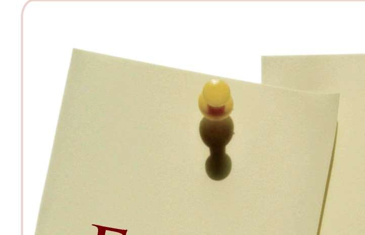
EKLER
EK - 1: İfade alma safhaları
EK - 2: İfade alma üzerine küçük grup
çalışmaları - genel bilgiler
EK - 3: Örnek Olay 1
EK - 4: Örnek Olay 2
EK - 5: İlişki Üçgeni: Tanık - Mağdur - Fail EK - 6: İfade Alan memur - Perspektifler EK - 7: Kara Kutu
EK - 8: Entelektüel Tartışma Olarak İfade Alma EK - 9: Koruma ve Direnme Mekanizmaları EK - 10: Komünikasyonun Üç Düzlemi
EK - 11: Altın Sorular
EK - 12: İfade Alma Planı
EK - 13: İfade Alma Teknikleri Eğitimi Müfredatı EK - 14: Eğitmen Notları

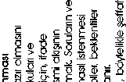
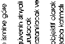
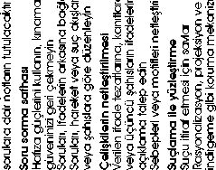

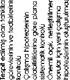
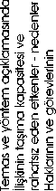
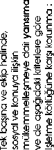
EKLER
1 \


EKLER
İfade alma ve tutanak tutma üzerine küçük gurup çalışmaları Genel Bilgiler
Hedef:
Katılımcılar rol oyunlarına katılarak deneyimler kazanacak ve aşama modeline uyarak ifade alma ve kayıt tutma üzerine alıştıma yapacaklardır.
Burada aşama modelinin ve kalite kriterlerinin özellikle eğitime nasıl yansı-tılabileceği ve pratikte (iyi olan nedir? rahatsız eden şeyler? eksik olan nedir?) nasıl uygulanabileceği konusunda tartışılacaktır.
Metod:
Oturumda sırasında küçük gurupların sunumu ve tecrübe alış verişi yoluyla değerlendirme
Görev:
1) Alıştırma konusundan yola çıkarak, polis soruşturmasının örneklerle hedeflerinin ve safhalarının hazılanması ve nedenleriyle açıklanması.
2) Rol oyunlarında ifade almanın esas safhaları gösterilecek, aynı zamanda hedefler ve metodlar geliştirilerek ifadesi alınanın ve soru sorulanın farklı perspektiflerinden olaya bakılacaktır. Şu safhalar tasvir edilecektir: kontakt safhası; açıklama; bilgilendirme; kişiyle ilgili sorular; serbest açıklama; soru sorma aşaması; suçlama ile karşılaştırma ve ifadenin sonuçlandırılması.
3) Kendi kendini sorgulama yoluyla soru soran kişiler, kendi açılarından iyi olan şeyleri ve hangi becerilerinin üzerinde daha fazla çalışmalarının gerektiğini değerlendireceklerdir.
4) Diğer katılımcılar gözlemci olacaklardır.
5) Son bir derleme safhasında rol oyunundan ortaklaşa elde edilmiş tecrübeler tartışılacaktır. Ayrıca bunların nasıl pratiğe geçirilebileceği tartı
şılacaktır.


EKLER
İfade alma ve tutanak tutma üzerine küçük gurup çalışmaları n
ÖRNEK OLAY 1
E K - 3
İyi giyinmiş bir erkek (fail 1), 19.03.2005 tarihinde, saat 08.15’de Ankara’nın canlı bir alış veriş sokağındaki antikacı dükkanına ilgiyle giriyor.
Tezgahtar bayanla birlikte dükkanda olan dükkan sahibine, müşteri maddi açıdan güçlü kişiler için değerli geleneksel altın ve gümüş mücevherler aradı-ğını söylüyor.
Dükkan sahibi kasadan seçkin özel mücevherler getirmeyi teklif ediyor.
Dükkan sahibinin kısa yokluğu sırasında müşteri cebinden aranıyor ve telefona “her şey yolunda” diyor.
Dükkan sahibi birkaç kadife kaplı tepsiyi gösterme amaçlı dükkana getirdiği anda, dükkana iki erkek giriyor.
Her biri bir siyah deri pilot çantası taşıyor.
1 numarlı fail dükkan sahibine ve tezgahtar bayana şunu söylüyor:
“Sakin olun! Kimseye bir zarar gelmeyecek. Sadece bizim talimatlarımıza uyun ve direnç göstermeyin!”
2 numaralı fail öncelikle birisinin girmesini önlemek amacıyla kapıda kalır.
3 numaralı fail tezgahtar kıza doğru aceleyle gider ve onu ne kendini kurta-rabileceği, ne de yardım çağırabileceği bir konumda tutar. Onu büroya itekler, onun ellerini ve ağızını yanında getirdiği bant ile bağlar.
1 numaralı fail dükkan sahibini bir tabanca ile tehdit eder ve dükkan ve kasa anahtarını vermesini ister.
2 numaralı fail dükkan anahtarını alır, giriş kapısını kilitler ve kapıya asılı tabelayı dışa doğru çevirir: “Biraz sonra dönerim!”
1 numaralı fail dükkan sahibini büroya itekler ve kasayı açtırır.
2 numaralı fail yanında getirdiği bant ile dükkan sahibini bir koltuğun üzerine bağlar ve ağzınıda bağlar.
3 numarlı fail iki mağduru denetler, bu arada 1 ve 2 numaralı failler dükkan yazar kasasından ve kasadan nakit paraları ve değerli mücevherleri toplarlar.
Ganimetlerini beraberlerinde getirdikleri siyah deri bavullara ve dükkan sahibinin olan bir kahverengi deri bavula saklıyorlar.
Dükkanı terk ederken failler dükkanın kapısını kilitlerler.
Bu durum karşı tarafta olan bir dükkanın sahibinin dikkatini çeker.
Bu tanık, bu üç kişinin dükkanın fazla uzağında olmayan, sürücüsünün arabada beklediği, kırmızı bir araba aceleyle bindiklerini gözlemler.
Arabayı park yerinden çıkartmaya çalışırken, arabanın sürücüsü yandan akan trafik sebebiyle fren yapmak ve direksiyonu hızla sağa kırmak zorunda kalır.


EKLER
Bu arada batıya doğru uzaklaşmadan önce sağ ön çamurluğu bir tarfik işareti direğine çarpar.
Tanık hızla arkadaşının dükkan kapısına gelir ve başarısız bir şekilde dükkanın kapısını açmaya çalışır.
Telefon yoluyla da arkadaşına ulaşmayı başaramadıktan sonra polise haber verir ve bir suç işlendiğine dair şüphesini beyan eder.
Polis, tanığın yaptığı vasıta tanımından yola çıkarak, vasıtanın sahibinin mahkumiyet almamış, 29 yaşında bir erkeğin olduğunu ortaya çıkarır.
Görev:
İfade almanın planlaması ve hazırlığını yapınız.
Alacağınız genel talimatlara göre ifade almanın herbir safhasına göre rol oyunlarını oynayınız.
Gurup içinde olmayan aktörler gözlemci olarak görev alacaklardır.
Gözlemcilerin görevi oynanan rolleri dikkatlice izlemek ve bu arada aşağıdaki sorulara cevap vermektir:
^ Neler pozitif yaşandı?
^ Uygulama için hangi alternatif olanaklar düşünülebilir?
^ Nerede değişiklik olması gerektiğini düşünüyorsunuz?
Aktörlerin oyunun aşamalarında yaşadıklarına dikkat etmeleri ve bunlardan ne tür deneyimler elde edebileceklerini anlamaları gerekmektedir. Birlikte pratiğe neyin geçirilebileceği değerlendirilecek ve nelerin zaten pratikte uygulanmakta olduğu tartışılacaktır.


EKLER
ÖRNEK OLAY 2
18.03.2005 tarihinde saat 10.30’da boş bir evin arka bahçesinde 28 ya
şında bir kadın, evin sahibi olan emlak şirketinin bir çalışanı tarafından ölü EK . 4
bulunmuştur.
Kurbanın yüzünde darp izlerine rastlanılmıştır (büyük ihtimalle yumruk darbelerinin yol açtığı). Boynunda boğma izleri görülebiliyordu. Kadının kıyafetleri yırtılmıştı. Adli tıbbın geçici raporunda ölüm zamanı olarak 17.03.2005 günü ve saat 22.00 civarı olarak belirtilmiştir.
Objektif olay bulgusu:
^ Ölenin eteğinde ve külotlu çorabında sperm izleri,
^ Kurbanın el çantasında daktiloskopik bir iz
^ Cesedin yanında ve evde aynı ayakkabı izleri (ayakkabı numarası 45)
^ Ölünün tırnaklarının altında kumaş parçaları Olay mahalinde faile ait olması mümkün bir çakmak bulunmuştur.
Kahverengi üstü yıpranış bir deri kılıfın içindedir.
Sübjektif olay bulgusu:
Kurbanın adı N.N. dir.
Olay mahallinden yaklaşık üç yüz metre uzaktaki Anacadde 16 nolu adreste, kiralık bir dairede yanlız başına yaşıyordu.
Komşuların verdiği bilgiye göre bir erkekle arkadaşlık ediyordu fakat o kişiden ayrılmıştı. Komşular tarafından en son 17.03.2005 tarihinde saat 18.00
civarında görülmüştü.
Alıştırma 2nin devamı:
19.03.2005 tarihinde yapılan bir şikayette, saat 21.30 sıralarında olay mahallinden uzak olmayan bir yerde otuz yaşlarında bir kadının bilinmeyen bir fail tarafından yumruklanarak saldırıya uğradığı beyan edilmiştir.
Fail kendini savunan kadını bir park alanına çekmeye çalışıyordu.
Kadın sesli bir şekilde imdat diye bağırıyordu. Bu sayede oradan geçenlerin dikkatini çekmiş ve onlarda yardımına koşmuşlardır.
Fail mağduru bırakmış ve parktan geçerek kaçmıştır.
Polis telefon yoluyla haberdar edilmiş, mağdurun ve tanıkların ifadesini alabilmiştir.
Bundan sonraki aşamada bir soruşturma açıldı ve saat 22.00 civarında olay mahallinden fazla uzak olmayan bir yerde, devriye polis ona yaklaşırken saklanmaya çalışan genç bir erkeği kontrol etti.
Failin tanımı bu erkeğe uyuyordu, bu yüzden kişisel bilgilerinin kontrolü ve şüpheli olduğu için göz altına alındı.
Görev:


EKLER
İfade almanın planlamasını ve hazırlığını yapınız.
Genel açıklamalar doğrultusunda ifade almanın safhaları üzerine rol oyunlarını oynayınız.
Gurup içinde olmayan aktörler gözlemci olarak görev alacaklardır.
Gözlemcilerin görevi, oynanan rolleri dikkatlice izlemek ve bu arada aşağıdaki sorulara cevap vermektir:
^ Neler pozitif yaşandı?
^ Uygulama için hangi alternatif olanaklar düşünülebilir?
^ Nerede değişiklik olması gerektiğini düşünüyorsunuz?
Aktörlerin oyunun aşamalarında yaşadıklarına dikkat etmekeri ve bunlardan ne tür deneyimler elde edebileceklerini anlamaları gerekmektedir. Birlikte pratiğe neyin geçirilebileceği değerlendirilecek ve nelerin zaten pratikte uygulanmakta olduğu tartışılacaktır.

EKLER
İLİŞKİ ÜÇGENİ: TANIK – MAĞDUR – FAİL
EK-5
EKLER
İFADE ALAN MEMUR - PERSPEKTİFLER
E K - 6


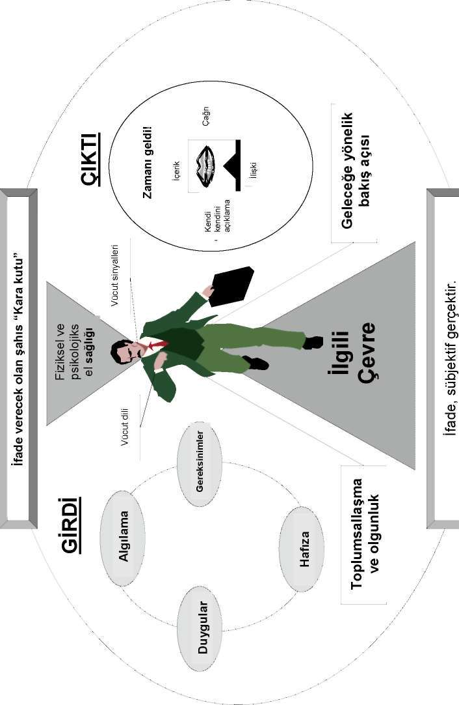
EKLER
KARA KUTU
ri
J
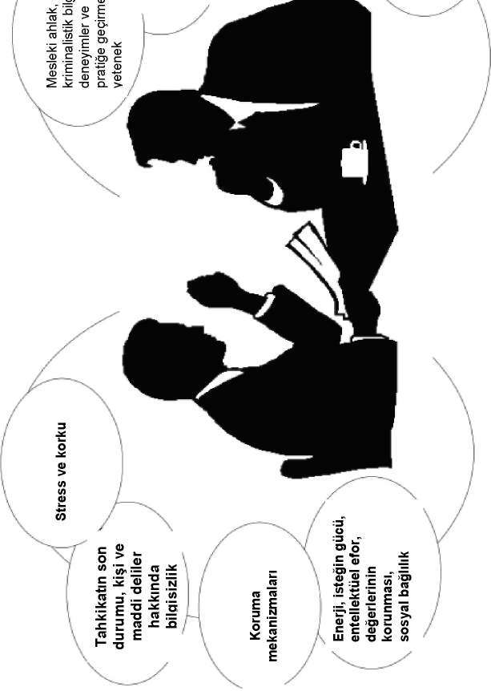
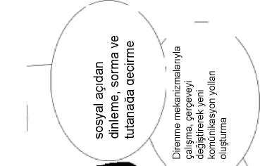


EKLER
ENTELEKTÜEL TARTIŞMA OLARAK İFADE ALMA
EK-8
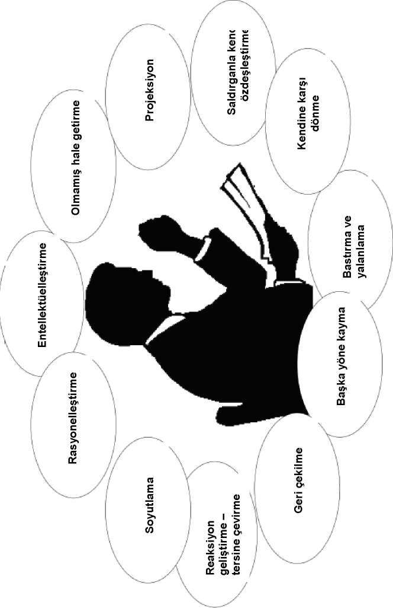
EKLER
KORUMA VE DİRENME MEKANİZMALARI
n EK-9

EKLER
ÜÇ BENLİK DÜZLEMİNİN İLİŞKİ VE İLETİŞİM BAĞLAMINA TERCÜMESİ
EK AQ


EKLER
ALTIN SORULAR
5. Soru sormanın hedefi /İfade alma
7 altın soru yardımıyla gerçeği bulmak.
Kim?
Ne?
Ne zaman?
Nerede?
Neden?
Ne ile?
Nasıl?
İFADE ALMA PLANI
İfade alma planı Sayfa: ………
EK-"^'
g e t i r i l m e s i
Dosyada yeri, Sayfa,
Notlar
gereken konular
Paragraf


EKLER
İFADE ALMA TEKNİKLERİ EĞİTİMİ MÜFREDATI
Hedef:
Katılımcılar kanun, psikoloji ve suçla mücadele çerçevesinde ve özellikle insan hakları bağlamında ifade alma eğitiminin temellerini bilecek ve uygulayabileceklerdir.
Pratiğe yönelik ve interaktif metotlarla sadece bu konular üzerine bilgi de
ğil, ikna yeteneği ve bilincin geliştirilmesi de hedefleniyor.
Seminer Yapısı:
Süre /
Konu
İçerik
Saat
' ^ Açılış
Açılış ve Giriş
' ^ Tanışma, ifade alma eğitimi üzerine bilgi 3
' ^ Beklentiler
İfade Alma
' ^ İfade Alma Kavramı
Kavramı ve
1
İfade Almanın
' ^ İfade Almanın Amacı
Amacı
' ^ Seçici/yapıcı algılama
' ^ Algılama çarpıklıkları
Algılama
2
' ^ Kişinin algılanması
' ^ Yalanlar
' ^ Geleneksel ifade alma yönteminde iletişim
' ^ Çağdaş ifade alma yönteminde iletişim İletişim
2
' ^ İletişim modelleri
' ^ İfade alan memurdan talepler
Polisin
1
Toplumdaki rolü
' ^ İfade alma işlemlerinin uluslar arası boyutu Polisin
İfade Alma
' ^ Türkiye’de polisin ifade alma işlemlerinin ya3
İşlemlerinin
sal boyutu
Yasal Boyutu
' ^ Polisin yürüttüğü işlemlerdeki önemi Yazılı Anlatım
' ^ Görüş bildirme soru formu
6
Analizi
' ^ Yazılı anlatım analizinin ilkeleri 112


EKLER
' ^ Planlama ve hazırlık
' ^ Olay hakkında bilgi
' ^ Hukuki esaslar
' ^ İfadesi alınacak şahıs hakkında bilgi
' ^ Kriminalistik hipotez oluşumu
' ^ Zaman
' ^ Katılanlar
' ^ İfadenin alınacağı oda
' ^ Akış planı
' ^ Uygulama safhası
' ^ Giriş konuşması
' ^ Hukuki hak ve görevlerinin anlatılması
' ^ Avukat getirtme hakkı
' ^ Şahsa dair ifade alma
' ^ Olaya dair ifade alma
' ^ Suskun kalan şahıs
' ^ Soru sorma safhası
' ^ Çelişkiler
' ^ Yalanlar
' ^ Bedensel sinyaller
' ^ Yasaklanmış psikolojik etki altına alma
' ^ Suçlama ile yüzleşme
' ^ İfade vermeye isteğini artırmak
' ^ Positif refleksiyon
İfade Alma
' ^ Soru tarzının anlamı / amacı
15
Safhaları
' ^ Suçu kabul etme
' ^ İtiraf ve delil değeri
' ^ İfade almanın sonuçlandırılması-bilanço
' ^ İfade verme sırasındaki davranışlar üzerine açıklama
' ^ Kayıt etmek
' ^ Kayıtların kontrolü ve tashihi
' ^ İfade kayıtlarını teslim etmek
' ^ Tanıkların ve mağdurların ifadelerinin alınması
' ^ Tanıkların ifadesinin alınması
' ^ Mağdurun ve etkilenen (zarar gören) kişilerin ifadesinin alınması
' ^ Mağdurun yalanları
' ^ Kurbanın ifadesinin alınmasındaki özellikler
' ^ Kognitif mülakat (soru-cevap)
' ^ Algılama bağlamı
' ^ Eksiksiz rapor
' ^ Bakış açısının değiştirilmesi
' ^ Derleme aşaması
' ^ İfdesi alınan-ifadenin incelenmesi ve değerlendirilmesi
' ^ İfade-içeriksel ve metodik değerlendirme
' ^ Kalite Yönetimi
' ^ Yapılan ifade almadan sonra kendini yargılama
' ^ Uzman fikir çerçevesi
Uygulama
' ^ Örnek ifade alma uygulaması
6
Genel
' ^ Genel Değerlendirme
Değerlendirme
3
ve Kapanış
' ^ Kapanış
TOPLAM 42


EKLER
EĞİTMEN NOTLARI
Eğitim yöntemi olarak “Sosyal Öğrenme”
E K - ^ ^
Algılamadaki “nasıl” geleneksel olarak uygulamada bir “usta-çırak ilişkisi”
çerçevesinde öğretilmekte ve öğrenilmektedir. Eğitim yöntemi olarak “sosyal öğrenme”, bu “ikili ilişkinin” (yani usta-çırak ilişkisinin) tüm seminer grubuna uyarlanmasına imkân sağlamaktadır. Bu yöntem iletişim ilişkisini bir öğretmen-öğrenci ilişkisinden, “birlikteliğin” seminer kültürüne değiştirmektedir.
“Sosyal öğrenme” doğrultusunda gerçekleştirilen seminerlerde, ortak olarak yaşanan deneyimler elde edilmesi için ortak deneyim ve yansıma bilgisi kullanılmaktadır. Bu geleneksel ve alternatif davranış ve iletişim üzerinde deneyler gerçekleştirilerek başarılmaktadır.
Bireysel olarak edinilen deneyimler müşterek olarak dile getirilmektedir.
Böylece ortak bir davranış ve deneyim bilgisi sağlanmaktadır. Ek teknik ve sosyal yetkinlikler kazanılmakta ve öz sorumluluk konusunda bilinçlilik yaratılır. Nelerin uygun, yardımcı, etik açıdan uygun ve uygulamayla ilişkili olduğu test edilmektedir.
Seminerde herkes “hata” yapma hakkına sahiptir. Herkesin “eğitim süreçlerini” “aptal sorularla” bölme hakkı olmalıdır çünkü ancak bu şekilde herkes birlikte ve birbirinden bir şeyler öğrenebilir. Teneffüsler deneyim alışverişi için kullanıldığında bu evreler kalıcı bir müşterek anlayışın geliştirilmesi önem ta
şımaktadır.
Günlük yaşam ve işte görme, duyma, hissetme ve sorular sorma birçok sefer unutulmaktadır. Birey bazında “unutulan şeyler” bu şekilde tekrar canlandırılabilir ve geliştirilebilir. Görmek, duymak, sormak ve hissetmek: başkalarını ve kendi kendini.
Bu destekleyici ve iyi niyetli geri beslemeyle (feedback) gerçekleşmektedir.
Bu özgüven ve güven ilişkisi yaratmaktadır.
Seminerde deneyimler müşterek olarak bir “koruyucu bölge” dahilinde edinilebilmektedir. Burada herkes söz konusu teklifi kendisi için ve çalışma ortamında faydalı kılmak için yer, zaman ve destekçi bulmaktadır.
Seminer Ön Hazırlıkları
Organizasyonel Ön Hazırlık
Oturma düzeni
^ Işık koşulları
^ Boyut


EKLER
^ Masa düzeni
^ Seminerin yapılacağı yere giden yolun işaretlenmesi Araçlar
^ Hangileri kullanılacak (tepegöz, Flip-Chart, Pin-Wand ...)
^ Eksiksiz olması ve çalışması
^ Tepegöz için yedek lamba
^ Flip-Chart için kâğıt
Seminer malzemeleri
^ Katılımcılar için dokümanlar
^ Kendi çalışma belgeleri
^ Yazma malzemeleri (kendisine ait ve katılımcı)
^ İsim kartçıkları
^ Boş asetatlar
^ Sunum kartçıkları
Seminer başlangıcı
^ Dakik
^ Selamlama
^ Seminerin hedefi
^ Seminerin seyri
^ Seminer beklentileri
^ Katılımcıların ön bilgileri
Takdim
^ İlk izlenim
Giriş
^ Sorunun güncelleştirilmesi
^ Kişisel ilginin sağlanması
^ Bilinen hususlara bağlanması
^ Hareket şeklinin planlanması
^ Beklenmedik giriş
^ Katılımcıları çalıştırmak
^ Sorunların grup tarafından çözümlenmesi Sunuculuk
^ Söylemek yerine soru sormak
^ Grubun görüşü


EKLER
^ Bozuklukların önceliği vardır
^ Değerlendirme ve yorumlamalarda dikkat
' “Geniş zaman” yerine “ben”
^ Sözsüz işaretlere dikkat edilmeli
^ Bilgilendirici dokümanları doğru zamanda verilmeli.
Flip-Chart
^ Tüm katılımcılar görebilmeli
^ Büyük ve okunaklı yazılmalı
^ Anlaşılır ve basit
^ Kısa ve kesin
Tepegöz
^ Projeksiyon alanı
^ Katılımcıların görüşünü önlemeyecek şekilde yerleşim Tepegöz asetatları
^ Harf büyüklüğü asgari 5 mm, bir fikir = bir asetat
^ Maksimum 6-7 satır, maksimum 3 renk
Seminerdeki sosyal formlar
^ Sunum
^ Eğitici konuşma
^ Grup çalışması
^ Eşleşmeli çalışma
^ Bireysel çalışma
Sunum
^ Biri konuşur - herkes dinler
^ Tek yönlü bilgi akışı
^ Tehlike: “Ne kadar uzun olursa dikkat o denli azalır”
Kullanım imkanı
^ Temellerin iletilmesi
^ Ortak bir başlangıç durumu oluşturulması Avantajları
^ Daha büyük katılımcı çevreleri için uygun
^ Makul bilgi aktarımı


EKLER
^ Kontrol etmesi daha kolay
^ Konudan sapmalar önlenebilir
Dezavantajları
^ Katılımcılar aktif değil
^ Konsantrasyon sorunları
^ Verimlilik düşük (pasif dinleyiciler ancak çok az şeyi fark etmekte)
^ Sunumu yapan kişinin retorik becerisi önem taşıyor
^ Dinleyiciler çabuk yorulur
^ Katılımcı düzeyinin ayarlanması sorunlu Davranış kuralları
^ Katılımcıların bilgi düzeyi dikkate alınmalı
^ Anahtar sözcük listesi dikkatli bir şekilde hazırlanmalı
^ Bölümleme yok
^ Her bir ünitenin süresi azami 45 dakikayı aşmamalı
^ Katılımcıların motive edilmesi için afişler aranmalı
^ Görsel yardımcı araçlar kullanılmalı
^ Uygulamaya yakın olmalı (örnekler, deneyim raporları)
^ Kısa cümleler - aralar/esler
^ Yavaş konuşma, vurgulama, melodik konuşma
^ Göz teması
^ Sözsüz katılımcı tepkilerine dikkat edilmeli
^ Katılımcıların konuşma seviyesine uygun davranılmalı
^ Soru sorma ve gerekirse tartışma için fırsat tanınmalı Eğitici konuşma
^ Sunumu yapan kişi ve katılımcı içerikleri (müfredatı) birlikte hazırlayacak
^ Müfredat serbest bir şekilde aktarılacak
^ Sunumu yapan kişi belirli yönlerde uyarılarda bulunacak Hedefli sorular kullanılarak idare
Tüm katılımcılar “AHA-deneyimi” yaşamalı!
Kullanım
^ Yeni müfredatların aktif olarak işlenmesi 117


EKLER
^ Mevcut bilgilerin tekrarlanması ve genişletilmesi
^ Ek teknik bilgilerin iletilmesi
^ Katılımcıların bilgi düzeyi eşit değilse veya bilinmiyorsa Avantajları
^ Düşünce süreçleri uyarılır
^ Aktifleştirme ve ardından güçlendirme
^ Anında başarı kontrolü
^ Daha az yorulma belirtisi
^ Kişisel temas
^ Katılımcıların bilgi düzeyi daha kolay dikkate alınabilir
^ Kalıcılık değeri yüksek
^ Dezavantajları
^ Eğitim hedefinden sapma tehlikesi
^ Hazırlama ve yürütme için çok vakit gerekli
^ Sunumu yapan kişiye yönelik yüksek pedagojik yetkinlik gerekliliği
^ Katılımcıların ön bilgi sahibi olması gerekiyor Davranış kuralları
^ Kendi uyarılarınızla düşünmeye teşvik ediniz
^ Sorular anlaşılır bir şekilde sorulmalı
^ Ağırlıklı olarak açık uçlu sorular sorulmalı
^ Katılımcı inisiyatifi teşvik edilmeli
^ Katılımcıların üzerinde kalıcı bir şekilde yoğunlaşılmalı
^ Sabırlı olunmalı, hemen hatalı yollara sapılmamalı
^ Flip-Chart ve/veya tepegöz kullanılmalı
^ Kontrol soruları sorulmalı
^ Kapanışta açık görüş belirtilmeli
Grup çalışması
Burada söz konusu olan, bir sorunun daha küçük gruplarda bağımsız bir şekilde işlenmesidir. Bunu takiben sonuçların sunumları ve bunların tüm grup dahilinde işlenmesi yapılacak.
Grup çalışması, karmaşık sorunların işlenmesi için uygundur. İdeal grup büyüklüğü 4-6 katılımcıdır.
Göreve göre bölünmüş (her gruba ayrı bir görev verilir) ve rekabetsel (tüm gruplara aynı görevler verilir) grup çalışmaları uygulanabilir.


EKLER
Kullanım
^ Çözüm önerilerinin işlenmesi
^ Konsept (kavram) ve stratejilerin irdelenmesi
^ Tekliflerin hazırlanması
Avantajları
^ Herkesin aktif katılımı
^ Çözümlerin filtreden geçirilmesi (ðzamandan tasarruf)
^ Güçlendirilmiş tartışma imkânı
^ Karmaşık sorunlar (yüksek başarı şansıyla) işlenebilirler Dezavantajları
^ Görüşlerin baskılanması tehlikesi
^ Katılımcılar arasında eşitsiz faaliyet
^ Zaman gereksinimi
Davranış kuralları
^ Görevlendirme iyi hazırlanmalı (göreve göre veya rekabetsel)
^ Anlaşılır hedefler verilmeli
^ Grup büyüklüğü ve bileşimine dikkat edilmeli
^ Süre yaklaşık 30-40 dakika
^ Tüm katılımcıların katılımı sağlanmalı
^ Rol dağılımına dikkat edilmeli (herkes eşit değerde)
^ Grup organizasyonu kendileri tarafından yapılmalı
^ Gruplar sürekli olarak izlenmeli
^ Baskın kişiler frenlenmeli, katılmayanlar canlandırılmalı
^ Sorunlar/güçlükler durumunda uyarılar verilmeli
^ Sonuçların görselleştirilmesi sağlanmalı (Flip-Chart, asetat)
^ Grup elde ettiği sonucu sunmalı
^ Değerlendirme ve son görüşme için yeterli vakit Eşleşmeli çalışma
Amaca (ve görevlendirmenin içeriğine) göre, eş seçimi serbest bırakılabilir, tesadüf prensibine göre oluşturulabilir (saydırılarak) veya homojen gruplar oluşturulabilir (genç, yaşlı, erkek, kadın).
Bireysel çalışma


EKLER
Bu form özellikle derinleşme, kontrol (anketler), kapanış niteliğindeki ve gerçek hayatta tek başına karar verilmesi gereken çalışmalar için uygundur.
Seminerin seyri
Bir bilgilendirme bölümünün veya bir işleme bölümünün ardından – en iyisi uzun sayılabilecek bir arayı takiben - sonuçlar ve içerikler kısaca özetlen-melidir
Semineri monoton olmayacak
^ Olabildiğince yüksek bağımsız çalışma sağlamaya çalışın - motivasyon ve özdeşleşme de aynı derecede yüksek olacaktır
^ İşlenen gerçekleri yapılandırın. Katılımcılar mümkün mertebe sonuçları (bitirilen bölümleri) “göz önünde tutmalı”
^ Daha seminer devam ederken olası zayıf noktaları belirleyin ve bunları yazarak not edin.
^ Semineri yoğun bir çalışma temposu içinde, ancak gevşek bir atmosferle gerçekleştirin. Hedefe yönelik sorular sorarak boşlukları önleyin.
^ Molalarda katılımcılarla yeterli ölçüde temas kurmaya çalışın ve tek bir kişinin sizi “meşgul etmesine” izin vermeyin
^ Akşam hep birlikte bir şeyler yapma konusunda düşünün
^ Uygun yerlerde övgü dağıtın
^ Huzuru bozan kişileri “uyarmaktan” çekinmeyin
^ Seminerin yorumlama ve kontrol bölümlerini ayrıntılı bir şekilde planlayın (başarı garantisi) Kontrol ve feedback (geri besleme)
Kontrol: Kontrol abartılmadan yapılmalıdır:
^ Uygulama süresi kısa sürmeli
^ Az miktarda malzeme gerektirmeli
^ İşlenmesi basit olmalı
^ Hızlı ve fazla iş yükü gerektirmeden değerlendirilebilmeli
^ Faydalı olmalı (kendi başına amaç olmamalı) Feedback: Başkalarından, kendileri üzerinde nasıl bir etkimiz olduğunu öğreniyoruz.
Dolaylı Feed-back (sözsüz sinyaller)


EKLER
Doğrudan Feed-back (yapıcı olmalı, açıklamalı - yaralayıcı değil, şikâyetçi değil, kimseye haksızlık edilmemeli, “ben böyle olduğunu hissettim”) Feedback için kuralları belirtin
^ Feedback isteyip istemediklerini sorun
^ Algılanabilmeli ve işlenmesi mümkün olmalı
^ Anında yapılmalı
^ Ayrıntılı ve somut olmalı
^ Algılamalar bu nitelikleriyle ifade edilmeli
^ Tahminler ve hisler, ne oldukları belirtilerek isimlendirilmeli
^ Feedback katlanılabilir olmalı
^ Aynı zamanda pozitif olmalı
^ Alıcı yanıt hakkına sahip olmalı
Feedback almaya yönelik kurallar
^ Sakin dinlenmeli
^ Hemen tepki verilmemeli
^ Feedback işlenmeli
^ Ancak sonra yanıt verilmeli
^ Gerekçelendirme yok
Sürekli konuşanlar:
Sürekli ve çok fazla uzun konuşuyor
Öneri: beceriyle araya girilmeli, süre kısıtlanmalı, katılım daha sonraya “aktarılmalı”
Çok bilenler:
Her konuda şikâyetçi, her şeyin cevabını biliyor, sizi sürekli bölüyor, kibirli davranıyor
Öneri: gülünç duruma düşürmeyin, grubun yorum yapmasına izin verin, karşı sorular sorun
Kavga arıyor, disiplinsiz ve terbiyesiz ifadeler ve kelimeler kullanıyor, inatçı (dogmatik)
Öneri: sakin ve gerçekçi kalın, grubun “frenlemesini” sağlayın Sıkılanlar.


EKLER
Tepki vermiyor, asla gülmüyor, konuşurken gözlerinize bakmıyor Öneri: Kendi kişisel uzmanlık alanına hitap edin, örnekler vermesini isteyin Masal anlatanlar:
Sürekli konudan uzaklaşıyor, karışık konuşuyor, kesin değil, “masallar” anlatıyor Öneri: konuya geri döndürün (kırmızı ip), sürenin kısıtlı olduğunu belirtin Kendini kanıtlamaya çalışanlar ve ukalalar: Sürekli ön planda olmaya çalışıyor, kapasitesinin gerçek sınırlarını bilmiyor,
“proliferasyon/gelişim nevrozundan” muzdarip Öneri: komik hale düşürmeyin, karşı sorular sorun, grubun görüş beyan etmesini sağlayın (“daha zor” vakaların karşısına çözümsüz veya çözümü güç görevler de çıkartılabilir)
Tuzakçılar:
Seminer idarecisini tuzak sorularla güç duruma düşürmeye çalışıyor Öneri: Tuzak soruları gruba aktarın, karşı sorular sorun Seminerin başlangıcı
Dakiklik önemli bir faktördür. Ancak abartılı ölçüde “saate dikkat etmekten” kaçının.
Her seminerin başlangıcında, mümkün olduğunca zorlamasız bir ortak öğrenme sağlanması için katılımcılara yeterli ölçüde oriyentasyon verilmesi önem taşımaktadır.

EKLER
Sunucunun
Takdimi
Mekanın
Keşfi
Katılımcıların
Tanıtılması
Seminer
Katılımcıların
İdaresince
İlgi
Açılış
Alanlarının
Öğrenilmesi
Seminerin
^^^^ Ders Araç
İçeriği ve Formu
Gereçlerinin
Hakkında İlk Bilgiler
Hazırlanması
Diğer
Organizasyonel
İhtiyaçlar
Giriş
Öngörülen seminer içeriği mümkün mertebe bütünsel olarak tasvir edilmelidir; yani değişik yönlerden açıklanmalıdır. Her zaman ilginç, şaşırtıcı bir giriş
yapmaya çalışın. İyi ve yüksek bir motivasyon etkisi sağlanabilirse, “günün kalan kısmında” neredeyse hiçbir şey ters gitmeyecektir. Bunun için birkaç örnek:
^ Kişisel bir referans oluşturun
^ Tanıdık konularla ilişkilendirin
^ Yapılacakları müştereken planlayın
^ İçeriksel bir kışkırtmayla başlayın
^ Beklenmedik bir girişle başlayın
Sunum tekniği
Sunum/Präsentation Latince’deki “prae sensus dare” ifadesinden gelmektedir ve anlamı “duyuların önüne sermek; takdim etmektir”.
Sunumda
^ Kişiler
^ Nesneler veya
^ Durumlar
farklı bakış açılarıyla (örneğin satış yapmak amacıyla) takdim edilebilir.
Seminerin açılışını yaptığınızda sağlam, kararlı bir sesle konuşmalısınız: 123


EKLER
' ^ Tüm katılımcıları selamlayın - önünüzdeki ortak çalışma konusundaki mutluluğunuzu ifade edin.
' ^ Seminerin hedefini belirtin. Kısa ve öz olun, bu hedefin tüm seminer ve tüm katılımcılar için bağlayıcı olduğu konusunda şüpheye yer bırakmayın ve bu bağlamda “disiplin” gösterilmesini talep edin.
' ^ Seminerin seyrinin genel hatları bilinmektedir. Duruma göre müşterek planlama ve/veya hareket şekli alanlarını tanıtın.
' ^ Henüz tanışma aşamasında somut referans noktalarını örnek olarak ortaya koyun.
' ^ Yaşanmış örnek deneyimlerle, komik anektodlarla kendinizi tanıtın; samimi, rahat ve gerçekçi davranın. İyi bir hazırlık yapın - ancak içinden geldiği gibi davranın.
' ^ Başlangıç korkusunu aşmak için çeşitli imkanlardan birini uygulayın (kendini tanıtma, partner merkezli görüşme, aranıyor ilanı).
' ^ Programın değişik noktaları için zaman sınırları koy ve bunları uygula.
' ^ Sigara sorununa kısa bir şekilde değin.
Sunum hazırlanması
^ Benim rolüm nedir?
^ Elimde ne kadar süre var?
^ Hangi hedef grup için konuşuyorum?
^ Hangi hedefe ulaşmak istiyorum?
^ Hangi içeriği aktarmak istiyorum?
^ Konuyla ilgili kişisel görüşüm nedir?
^ Hangi noktada hangi yardımcı araçları kullanacağım?
^ Tüm sunum boyunca hangi biçimlendirme unsurlarını kullanacağım?
^ Dinleyicilere hangi genel görüntüyü vermek istiyorum?
^ Dinleyicilere karşı ne tür bir “dil” kullanacağım?
^ Gerekli tartışmayı nasıl şekillendireceğim?
Sunumun hazırlanmasıyla ilgili olası sorular
^ Rol
^ Sunumu ben mi yapıyorum?
^ Bağımsız olarak mı yoksa bir kurumun temsilcisi olarak mı buradayım?
^ İdareci miyim?
^ Ben etkileniyor muyum?


EKLER
^ Bir çalışan mıyım?
Zaman çizelgesi
^ Kim karar veriyor?
^ Değiştirme imkânı var mı?
^ Zaman çizelgesini ilan edecek miyim?
Hedef grup
^ Ne tür bir beklenti bilançosu mevcut (açıklık sağlayın, ön konuşma yapın)?
Hedef
^ Uygulamalarımda anlaşılır olmalı mıyım veya buna izin var mı?
^ Açık, kesin olmayan bilgiler veya hatalı bilgiler verecek miyim veya vermeli miyim?
^ Sorunlu noktalarını ve sunumun hedeflerini kesin bir şekilde tanımlamalı mıyım?
^ Etkileri açıklayacak mıyım?
^ Alternatifler konusunda bilgi verecek miyim?
^ Hedefleri katılımcılar için daha anlaşılır kılacak mıyım?
İçerik
^ Konuşmamı bölümlere ayıracak mıyım?
^ Bir özet yapacak mıyım?
Görüş
^ Konuya yaklaşımım olumlu mu, olumsuz mu yoksa tarafsız mı?
^ Resmi görüşüm nedir?
^ Kişisel görüşüm nedir?
^ Herhangi bir ayrım yapacak mıyım?
Yardımcı araçlar
^ Bir sunumun etkisi, sözel ifadenin ve beden dilinin yanı sıra ek medyalar da kullanıldığında artmaktadır.
^ Örneğin tepegöz asetatları, videolar, ses bantları, tahta veya diğer eşyalar gibi çeşitli yardımcı araçlar kullanılarak dinleyicilerin dikkat düzeyi yükseltilebilir.
^ Yardımcı araçların kullanımına ilişkin kesin bir plan oluşturulmalıdır.
^ İçeriğin anlaşılabilirliği, eşzamanlı olarak yardımcı araçlar kullanılarak desteklenebilir.

Şekillendirme unsurları
^ Ön sunum
^ Tartışma
^ Temel noktaların birlikte hazırlanması/işlenmesi
^ Sorulara verilen tepkiler (hemen değinme, daha sonraki bir zamana erteleme, kapanış tartışmasını işaret etme) Genel görüntü
^ Görünüm
^ Kıyafet seçimi
Dil
^ Bilgi aktarmak istiyorsanız anlaşılır olmaya gayret etmelisiniz!
^ Ön bilgi durumunu ve şekillendirme durumunu dinleyicilere göre uyarlayın.
^ Teknik terminoloji (“termini technici”), yabancı kelimeler, kısaltmalar ve alıntılar kullanırken dikkat!
^ Şive kullanılması ancak konu ve dinleyici kitlesine bağlı olarak uygun olabilir!